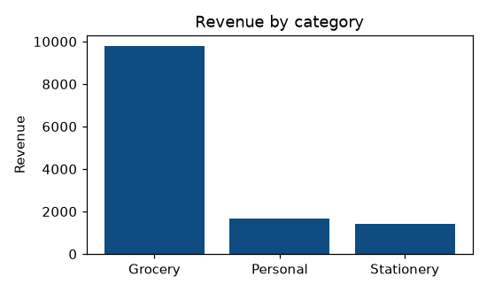
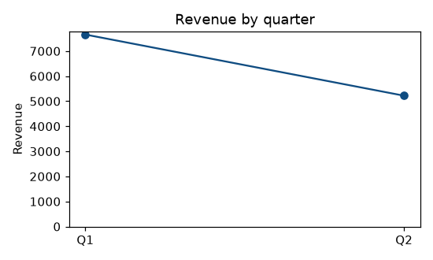

15 experiments, each set out as 1. Question, 2. Aim, 3. Steps, 4. Programme, 5. Execution and Results.
Code lives in labs/course-11-bi/.
NOTE
On the tooling. Power BI Desktop is Windows-only and Tableau Desktop is proprietary; neither can be installed in the environment these notes are verified in. So each experiment has two halves:
tools/data-science/run_bi_labs.py. Its steps, its code and what it printed are under
3. Steps, 4. Programme and 5. Execution and Results.Eleven of the fifteen have a runnable half. Experiments 1, 2, 8 and 12 are pure tool operation with nothing to compute, so they are click-path only and say so. The runner asserts that list against what is on disk, so an experiment cannot quietly go missing.
The Python halves are not a substitute for the tools. They exist so every figure in these notes is produced by running code — when Unit 3 claims a fan trap turns ₹12,880 into ₹25,760, experiment 14 proves it.
pip install -r tools/requirements.txt
python3 tools/data-science/run_bi_labs.py| Tool | How | Catch |
|---|---|---|
| Power BI Desktop | Free from the Microsoft Store or download centre | Windows only. Mac users need a VM or Parallels |
| Power BI Service | app.powerbi.com, free tier | Sharing needs Pro on both sides |
| Tableau Public | Free download, no licence | Everything you save is published to the open web |
| Tableau Desktop | 14-day trial, or a free student licence (1 year, with proof of enrolment) | Apply early — approval takes days |
READ THIS BEFORE EXPERIMENT 8
Tableau Public publishes your workbook to the internet and lets anyone download it. For the sample datasets these experiments use, that is fine and intended. Never put real student, employee, patient or customer data in it. Check what is in the extract before you press Save. This is a genuine, repeated real-world data breach, not a theoretical worry.
| Tool | File | Why |
|---|---|---|
| Power BI | .pbix |
Contains queries, model, measures and data |
| Tableau | .twbx |
Packaged. A .twb carries no data and opens empty |
Submitting a .twb is the commonest way to lose lab marks.
Explore the BI tools: compare Power BI with Tableau.
Load the same data into both tools, build one chart in each, and compare them from experience.
| Criterion | Power BI | Tableau |
|---|---|---|
| Time to first chart | ||
| Where you got stuck | ||
| Data preparation | Power Query | Data Source tab / Prep |
| Calculation language | DAX, M | Calculated fields, LOD |
| Desktop OS | Windows only | Windows and macOS |
| Cost to share | Pro per user | Public free (and public) |
There is no program: this is a comparison, not a computation — click-path only.
NOT RUN HERE
The click-path needs Power BI Desktop, which runs only on Windows, and Tableau Desktop or Tableau Public, which this environment cannot install, so nothing on this page claims to have done it.
For the viva: the differences that decide real deployments are cost, existing stack, who builds the reports, and macOS — not the feature list. The tools have converged. Unit 1 §1.7 has the full comparison.
RESULT
A comparison table filled in from your own use of both tools.
Build a simple retail dashboard in Power BI and in Tableau.
Build the same three-visual dashboard twice, once in each tool.
Use the star schema from fixtures.py — export it to CSV first, or use any retail dataset.
In Power BI: Get Data → Text/CSV → Transform Data → set types → Close & Apply → Model view → check relationships → build three visuals (a card, a ranked bar, a line) → arrange per Unit 5 §5.5.
In Tableau: Connect → Text file → drag the fact and dimension tables onto the canvas → Sheet 1 → build the same three views → New Dashboard → drag them in.
Note where each tool made you stop and think.
There is no program — click-path only.
NOT RUN HERE
The click-path needs Power BI Desktop, which runs only on Windows, and Tableau Desktop or Tableau Public, which this environment cannot install, so nothing on this page claims to have done it.
Build the same dashboard twice and note where each tool made you stop and think. That comparison is worth more than either dashboard.
RESULT
The same dashboard in both tools, and a note of where each one made you stop and think.
Connect Power BI to different data sources: Excel, CSV, the web and a folder.
Load each kind of source, and catch the way each one fails silently.
In Python, 03_data_sources.py:
THE CLICK-PATH, IN POWER BI
Get Data -> Excel Workbook -> pick the TABLE, not the sheet
Get Data -> Text/CSV -> CHECK the delimiter and encoding in the preview
Get Data -> Web -> paste a JSON URL, then expand records and lists
Get Data -> Folder -> Combine, for many identically shaped files
THE TRAPS
The Python half runs each format and demonstrates its silent failure mode:
| Trap | What happens | Asserted |
|---|---|---|
| Wrong delimiter | A semicolon CSV read as comma gives one column, no error | ✓ |
| Wrong encoding | UTF-8 read as Latin-1 turns Vijayawāda into VijayawÄda |
✓ |
| Sheet, not table | The header becomes "Monthly Sales Report" and 4 junk rows load |
✓ |
| Nested JSON | Cells contain dicts and lists until json_normalize flattens them |
✓ |
In Python, 03_data_sources.py:
"""Experiment 3 — Connecting to different data sources.
The Power BI half is a click-path (Get Data -> Excel / Text-CSV / Web) and is
written out in lab.md. What runs here is the part that actually matters and
that students get wrong: every format has a failure mode, and the failure is
silent. Each one below is DEMONSTRATED failing and then fixed.
"""
import io
import json
import pathlib
import tempfile
import pandas as pd
from fixtures import DIM_STORE, FACT_SALES
TMP = pathlib.Path(tempfile.mkdtemp(prefix="bi_lab3_"))
def csv_round_trip():
"""The baseline: write a CSV, read it back, prove nothing changed."""
path = TMP / "sales.csv"
FACT_SALES.to_csv(path, index=False)
back = pd.read_csv(path)
assert back.shape == FACT_SALES.shape, (back.shape, FACT_SALES.shape)
assert list(back.columns) == list(FACT_SALES.columns)
assert back["qty"].sum() == FACT_SALES["qty"].sum() == 87
print(f" CSV {back.shape[0]} rows x {back.shape[1]} cols, qty total "
f"{back['qty'].sum()} -- unchanged")
def the_delimiter_trap():
"""A semicolon CSV read as comma-separated: ONE column, no error."""
text = "store_key;store;region\nT1;Vijayawada;South\nT2;Guntur;South\n"
wrong = pd.read_csv(io.StringIO(text))
assert wrong.shape[1] == 1, wrong.shape
assert wrong.columns[0] == "store_key;store;region"
right = pd.read_csv(io.StringIO(text), sep=";")
assert right.shape == (2, 3), right.shape
assert list(right.columns) == ["store_key", "store", "region"]
print(f" semicolon CSV read as comma -> {wrong.shape[1]} column, NO ERROR")
print(f" the same file with sep=';' -> {right.shape[1]} columns")
print(" Power BI shows this in the preview pane. LOOK at the preview")
print(" before pressing Load -- it is the whole point of that screen")
def the_encoding_trap():
"""UTF-8 written, Latin-1 read: names silently mangled, no exception."""
names = pd.DataFrame({"store": ["Vijayawāda", "Guntūr"]})
path = TMP / "names.csv"
names.to_csv(path, index=False, encoding="utf-8")
right = pd.read_csv(path, encoding="utf-8")
wrong = pd.read_csv(path, encoding="latin-1")
assert list(right["store"]) == ["Vijayawāda", "Guntūr"]
assert list(wrong["store"]) != list(right["store"])
assert "Ä" in wrong["store"][0] or "Å" in wrong["store"][0], wrong["store"][0]
print(f" utf-8 file read as utf-8 -> {right['store'][0]}")
print(f" the SAME file read as latin-1 -> {wrong['store'][0]}")
print(" no exception, no warning. This is why the encoding dropdown")
print(" exists, and why you check a name with an accent in it")
def excel_sheet_versus_table():
"""A sheet brings the title row and the blank line. A named table does not."""
path = TMP / "report.xlsx"
with pd.ExcelWriter(path) as xl:
# A sheet as a human would lay it out: title, blank row, then data.
messy = pd.DataFrame(
[["Monthly Sales Report", None, None],
[None, None, None],
["store_key", "store", "region"],
["T1", "Vijayawada", "South"],
["T2", "Guntur", "South"]])
messy.to_excel(xl, sheet_name="Report", index=False, header=False)
DIM_STORE.to_excel(xl, sheet_name="Clean", index=False)
raw = pd.read_excel(path, sheet_name="Report")
assert raw.columns[0] == "Monthly Sales Report", list(raw.columns)
assert raw.shape[0] == 4, raw.shape
fixed = pd.read_excel(path, sheet_name="Report", skiprows=2)
assert list(fixed.columns) == ["store_key", "store", "region"], list(fixed.columns)
assert fixed.shape[0] == 2
clean = pd.read_excel(path, sheet_name="Clean")
assert list(clean.columns) == list(DIM_STORE.columns)
assert clean.shape == DIM_STORE.shape
print(f" sheet as-is -> header is '{raw.columns[0]}', {raw.shape[0]} junk rows")
print(f" skiprows=2 -> {list(fixed.columns)}")
print(f" a proper table -> {clean.shape[0]} rows, correct headers immediately")
print(" in Power BI: pick the TABLE in the navigator, not the sheet.")
print(" If there is no table, 'Use First Row as Headers' + Remove Top Rows")
def web_api_json_is_nested():
"""A Web API returns nested JSON. Expanding it is the whole task."""
payload = {
"meta": {"generated": "2026-08-27", "count": 2},
"results": [
{"store": {"key": "T1", "name": "Vijayawada"},
"sales": [{"product": "P1", "qty": 10}, {"product": "P3", "qty": 5}]},
{"store": {"key": "T2", "name": "Guntur"},
"sales": [{"product": "P2", "qty": 8}]},
],
}
path = TMP / "api.json"
path.write_text(json.dumps(payload))
doc = json.loads(path.read_text())
# Reading it naively gives one row per result with objects inside cells.
naive = pd.DataFrame(doc["results"])
assert isinstance(naive["store"][0], dict), "the cell holds a DICT, not a value"
assert isinstance(naive["sales"][0], list), "and this one holds a LIST"
# json_normalize with record_path is the fix -- Course 9 Unit 3's function.
flat = pd.json_normalize(doc["results"], record_path="sales",
meta=[["store", "key"], ["store", "name"]])
assert flat.shape == (3, 4), flat.shape
assert list(flat.columns) == ["product", "qty", "store.key", "store.name"]
assert flat["qty"].sum() == 23
assert list(flat["store.key"]) == ["T1", "T1", "T2"]
print(f" naive read -> {naive.shape[0]} rows, cells contain dicts and lists")
print(f" json_normalize -> {flat.shape[0]} rows x {flat.shape[1]} cols, qty {flat['qty'].sum()}")
print(" Power BI does this with the EXPAND arrows on record and list")
print(" columns. It is the same operation, clicked instead of typed")
def import_versus_directquery():
"""Not runnable -- a table, because the choice is the examinable part."""
rows = [
("Where the data sits", "Copied into the .pbix", "Stays in the source"),
("Speed", "Fast (in-memory columnar)", "The source's speed"),
("Freshness", "As of last refresh", "Live"),
("Size limit", "1 GB model on Pro", "None -- no copy"),
("DAX available", "All of it", "A restricted subset"),
("Load on source", "Only at refresh", "Every interaction"),
]
assert len(rows) == 6
print(" Import vs DirectQuery:")
print(f" {'':22s} {'IMPORT':28s} DIRECTQUERY")
for label, imp, dq in rows:
print(f" {label:22s} {imp:28s} {dq}")
print(" Import is the default and the right answer unless the data is")
print(" too large to copy or must be to-the-second")
def main():
print("Experiment 3 -- Connecting to different data sources")
# Step 1: Load a CSV, and check it round-trips
csv_round_trip()
# Step 2: Read a semicolon file as comma-separated
the_delimiter_trap()
# Step 3: Read UTF-8 as Latin-1
the_encoding_trap()
# Step 4: Load a sheet, and then a table
excel_sheet_versus_table()
# Step 5: Flatten a web API's nested JSON
web_api_json_is_nested()
# Step 6: Compare Import with DirectQuery
import_versus_directquery()
if __name__ == "__main__":
main()NOT RUN HERE
The click-path needs Power BI Desktop, which runs only on Windows, so nothing on this page claims to have done it. What follows is the Python half, which runs: the same operation, executed and asserted.
In Python, 03_data_sources.py:
OUTPUT
Experiment 3 -- Connecting to different data sources
CSV 9 rows x 4 cols, qty total 87 -- unchanged
semicolon CSV read as comma -> 1 column, NO ERROR
the same file with sep=';' -> 3 columns
Power BI shows this in the preview pane. LOOK at the preview
before pressing Load -- it is the whole point of that screen
utf-8 file read as utf-8 -> Vijayawāda
the SAME file read as latin-1 -> VijayawÄda
no exception, no warning. This is why the encoding dropdown
exists, and why you check a name with an accent in it
sheet as-is -> header is 'Monthly Sales Report', 4 junk rows
skiprows=2 -> ['store_key', 'store', 'region']
a proper table -> 3 rows, correct headers immediately
in Power BI: pick the TABLE in the navigator, not the sheet.
If there is no table, 'Use First Row as Headers' + Remove Top Rows
naive read -> 2 rows, cells contain dicts and lists
json_normalize -> 3 rows x 4 cols, qty 23
Power BI does this with the EXPAND arrows on record and list
columns. It is the same operation, clicked instead of typed
Import vs DirectQuery:
IMPORT DIRECTQUERY
Where the data sits Copied into the .pbix Stays in the source
Speed Fast (in-memory columnar) The source's speed
Freshness As of last refresh Live
Size limit 1 GB model on Pro None -- no copy
DAX available All of it A restricted subset
Load on source Only at refresh Every interaction
Import is the default and the right answer unless the data is
too large to copy or must be to-the-second
All four fail silently. That is why the preview pane exists, and why you look at it before pressing Load.
Also asserted: the Import vs DirectQuery comparison. Import is the default.
RESULT
All four traps are reproduced and fixed; each one fails without an error, which is why the preview pane exists.
Clean and transform data with Power Query.
Apply each Power Query step, and see that the order of the steps changes the answer.
In Python, 04_power_query.py:
THE CLICK-PATH, IN POWER BI
Transform -> Format -> Trim / Capitalize Each Word
Transform -> Fill -> Down
Home -> Remove Rows -> Remove Duplicates
Transform -> Replace Values
Transform -> Unpivot Columns
Home -> Merge Queries / Append Queries
Transform -> Group By
In Python, 04_power_query.py:
"""Experiment 4 — Data cleaning and transformation with Power Query.
Power Query is a recorded, ordered list of steps replayed at every refresh.
That ordering is not decoration -- the SAME steps in a different order give a
different answer, and this script proves it.
Each function is one ribbon button, with the pandas call that does the same
thing, so the pair is learnable together.
"""
import pandas as pd
# A deliberately dirty extract: the shapes real spreadsheets arrive in.
DIRTY = pd.DataFrame({
"store": [" Vijayawada ", "GUNTUR", "Vijayawada", "Hyderabad",
"Vijayawada", "guntur", None],
"region": ["South", None, None, "North", None, None, "North"],
"sales": ["2,800", "1680", "700", "800", "700", "1680", "n/a"],
"date": ["2026-01-15", "2026-01-15", "2026-01-15", "2026-02-10",
"2026-01-15", "2026-01-15", "2026-02-10"],
})
def trim_and_clean():
"""Transform -> Format -> Trim, and Clean (removes control characters)."""
df = DIRTY.copy()
assert df["store"][0] == " Vijayawada ", "leading and trailing spaces"
df["store"] = df["store"].str.strip()
assert df["store"][0] == "Vijayawada"
# "Vijayawada" and " Vijayawada " are DIFFERENT values until trimmed --
# which is why an untrimmed column produces two slicer entries that look
# identical on screen.
raw_distinct = DIRTY["store"].nunique(dropna=True)
trimmed_distinct = df["store"].nunique(dropna=True)
assert raw_distinct == 5 and trimmed_distinct == 4, (raw_distinct, trimmed_distinct)
print(f" Trim: {raw_distinct} distinct stores -> {trimmed_distinct}")
print(" an untrimmed column gives two slicer entries that look the same")
def case_folding_is_not_trim():
"""'GUNTUR', 'Guntur' and 'guntur' are three stores until you fix case."""
df = DIRTY.copy()
df["store"] = df["store"].str.strip()
assert df["store"].nunique(dropna=True) == 4
df["store"] = df["store"].str.title()
assert df["store"].nunique(dropna=True) == 3, sorted(df["store"].dropna().unique())
assert sorted(df["store"].dropna().unique()) == ["Guntur", "Hyderabad", "Vijayawada"]
print(" Transform -> Format -> Capitalize Each Word: 4 -> 3 distinct stores")
print(" GUNTUR / guntur were separate rows in every chart")
def fill_down():
"""Transform -> Fill -> Down. The classic merged-cell repair."""
df = DIRTY.copy()
assert df["region"].isna().sum() == 4
df["region"] = df["region"].ffill()
assert df["region"].isna().sum() == 0
assert list(df["region"]) == ["South"] * 3 + ["North"] * 4, list(df["region"])
print(" Fill Down: 4 nulls -> 0")
print(" merged cells in Excel export as a value then blanks. Fill Down")
print(" is the repair -- but ONLY if the rows are still in source order")
def replace_values_and_types():
"""Replace Values, then Change Type. Order matters -- see below."""
df = DIRTY.copy()
# "n/a" and thousands separators both defeat a numeric conversion.
cleaned = (df["sales"].str.replace(",", "", regex=False)
.replace("n/a", None))
numeric = pd.to_numeric(cleaned, errors="raise")
assert numeric.isna().sum() == 1, "n/a became null, not zero"
assert numeric.sum() == 8360.0, numeric.sum()
# The alternative -- replacing n/a with 0 -- changes every average.
as_zero = pd.to_numeric(cleaned.fillna(0))
assert as_zero.sum() == 8360.0, "the SUM is the same"
assert round(numeric.mean(), 4) == 1393.3333, round(numeric.mean(), 4)
assert round(as_zero.mean(), 4) == 1194.2857, round(as_zero.mean(), 4)
print(f" Replace ',' then to-number: sum {numeric.sum():.0f}, "
f"mean {numeric.mean():.4f} (n/a -> null, excluded)")
print(f" n/a replaced with 0 instead: sum {as_zero.sum():.0f}, "
f"mean {as_zero.mean():.4f}")
print(" the SUM is identical and the MEAN is not. Null excludes the")
print(" row; zero counts it as a real zero. State which you chose")
def remove_duplicates_depends_on_the_columns():
"""Remove Duplicates removes rows identical in the SELECTED columns."""
df = DIRTY.copy()
df["store"] = df["store"].str.strip().str.title()
all_cols = df.drop_duplicates()
on_store = df.drop_duplicates(subset=["store"])
on_store_date = df.drop_duplicates(subset=["store", "date"])
assert len(df) == 7
# Rows 4 and 5 are exact copies of rows 2 and 1, so two go.
assert len(all_cols) == 5, len(all_cols)
assert len(on_store) == 4, len(on_store)
assert len(on_store_date) == 4, len(on_store_date)
print(f" Remove Duplicates on: all columns -> {len(all_cols)} rows")
print(f" [store] -> {len(on_store)} rows")
print(f" [store,date]-> {len(on_store_date)} rows")
print(" select the wrong columns and you delete real data. It keeps")
print(" the FIRST occurrence, so sort before de-duplicating")
def step_order_changes_the_answer():
"""The demonstration that justifies the whole Applied Steps pane."""
df = DIRTY.copy()
df["sales_n"] = pd.to_numeric(
df["sales"].str.replace(",", "", regex=False).replace("n/a", None))
# Order A: de-duplicate FIRST, then trim/case-fold.
a = df.drop_duplicates(subset=["store", "date"]).copy()
a["store"] = a["store"].str.strip().str.title()
a_total = a["sales_n"].sum()
# Order B: trim/case-fold FIRST, then de-duplicate.
b = df.copy()
b["store"] = b["store"].str.strip().str.title()
b = b.drop_duplicates(subset=["store", "date"])
b_total = b["sales_n"].sum()
assert len(a) == 6 and len(b) == 4, (len(a), len(b))
# A keeps 2800+1680+700+800+1680; B keeps 2800+1680+800.
assert a_total == 7660.0 and b_total == 5280.0, (a_total, b_total)
assert a_total - b_total == 2380.0
print(" SAME two steps, two orders:")
print(f" de-duplicate then clean -> {len(a)} rows, total {a_total:.0f}")
print(f" clean then de-duplicate -> {len(b)} rows, total {b_total:.0f}")
print(f" the two orders differ by {a_total - b_total:.0f}")
print(" ' Vijayawada ' and 'Vijayawada' are not duplicates until")
print(" they have been trimmed, so de-duplicating first MISSES them.")
print(" CLEAN BEFORE YOU DE-DUPLICATE -- and this is why Applied")
print(" Steps is an ordered list and not a set")
def unpivot_is_the_examinable_one():
"""Transform -> Unpivot Columns. pandas calls it melt; Tableau calls it Pivot."""
wide = pd.DataFrame({"store": ["T1", "T2"],
"Jan": [5000, 3000], "Feb": [5200, 3100]})
long = wide.melt(id_vars="store", var_name="month", value_name="sales")
assert wide.shape == (2, 3)
assert long.shape == (4, 3), long.shape
assert list(long.columns) == ["store", "month", "sales"]
assert long["sales"].sum() == wide[["Jan", "Feb"]].to_numpy().sum() == 16300
# The reason: a March column breaks the wide chart and not the long one.
wide_mar = wide.assign(Mar=[5400, 3200])
long_mar = wide_mar.melt(id_vars="store", var_name="month", value_name="sales")
assert long_mar.shape == (6, 3), "same three columns, more rows"
assert list(long_mar.columns) == list(long.columns), \
"the SCHEMA did not change -- that is the whole point"
print(f" Unpivot: {wide.shape} wide -> {long.shape} long, total {long['sales'].sum()}")
print(f" add a March column: {wide_mar.shape} wide -> {long_mar.shape} long")
print(" the long table's COLUMNS did not change, so no chart broke.")
print(" Power Query: Unpivot. Tableau: Pivot. pandas: melt")
def group_by_and_merge():
"""Group By, and Merge Queries -- the last two ribbon buttons that matter."""
df = DIRTY.copy()
df["store"] = df["store"].str.strip().str.title()
df["sales_n"] = pd.to_numeric(
df["sales"].str.replace(",", "", regex=False).replace("n/a", None))
df = df.dropna(subset=["store"])
grouped = (df.groupby("store", as_index=False)
.agg(total=("sales_n", "sum"), lines=("sales_n", "size")))
assert len(grouped) == 3
assert grouped.set_index("store")["total"].to_dict() == \
{"Guntur": 3360.0, "Hyderabad": 800.0, "Vijayawada": 4200.0}
lookup = pd.DataFrame({"store": ["Vijayawada", "Guntur", "Hyderabad"],
"manager": ["Asha", "Ravi", "Meena"]})
merged = grouped.merge(lookup, on="store", how="left")
assert merged["manager"].isna().sum() == 0
assert len(merged) == len(grouped), "a LEFT join to a unique key cannot add rows"
print(" Group By store:")
for _, r in grouped.iterrows():
print(f" {r['store']:12s} total {r['total']:7.0f} ({r['lines']} lines)")
print(" Merge Queries (left join to a unique key) added manager, no row growth")
print(" if a merge ADDS rows, the right-hand key is not unique --")
print(" that is the fan trap, and experiment 14 measures it")
def main():
print("Experiment 4 -- Power Query cleaning and transformation")
# Step 1: Trim and clean the text
trim_and_clean()
# Step 2: See that changing case does not trim
case_folding_is_not_trim()
# Step 3: Fill down
fill_down()
# Step 4: Replace values, and set the types
replace_values_and_types()
# Step 5: Remove duplicates, on chosen columns
remove_duplicates_depends_on_the_columns()
# Step 6: Swap the order of two steps
step_order_changes_the_answer()
# Step 7: Unpivot
unpivot_is_the_examinable_one()
# Step 8: Group by, and merge queries
group_by_and_merge()
if __name__ == "__main__":
main()NOT RUN HERE
The click-path needs Power BI Desktop, which runs only on Windows, so nothing on this page claims to have done it. What follows is the Python half, which runs: the same operation, executed and asserted.
In Python, 04_power_query.py:
OUTPUT
Experiment 4 -- Power Query cleaning and transformation
Trim: 5 distinct stores -> 4
an untrimmed column gives two slicer entries that look the same
Transform -> Format -> Capitalize Each Word: 4 -> 3 distinct stores
GUNTUR / guntur were separate rows in every chart
Fill Down: 4 nulls -> 0
merged cells in Excel export as a value then blanks. Fill Down
is the repair -- but ONLY if the rows are still in source order
Replace ',' then to-number: sum 8360, mean 1393.3333 (n/a -> null, excluded)
n/a replaced with 0 instead: sum 8360, mean 1194.2857
the SUM is identical and the MEAN is not. Null excludes the
row; zero counts it as a real zero. State which you chose
Remove Duplicates on: all columns -> 5 rows
[store] -> 4 rows
[store,date]-> 4 rows
select the wrong columns and you delete real data. It keeps
the FIRST occurrence, so sort before de-duplicating
SAME two steps, two orders:
de-duplicate then clean -> 6 rows, total 7660
clean then de-duplicate -> 4 rows, total 5280
the two orders differ by 2380
' Vijayawada ' and 'Vijayawada' are not duplicates until
they have been trimmed, so de-duplicating first MISSES them.
CLEAN BEFORE YOU DE-DUPLICATE -- and this is why Applied
Steps is an ordered list and not a set
Unpivot: (2, 3) wide -> (4, 3) long, total 16300
add a March column: (2, 4) wide -> (6, 3) long
the long table's COLUMNS did not change, so no chart broke.
Power Query: Unpivot. Tableau: Pivot. pandas: melt
Group By store:
Guntur total 3360 (2 lines)
Hyderabad total 800 (1 lines)
Vijayawada total 4200 (3 lines)
Merge Queries (left join to a unique key) added manager, no row growth
if a merge ADDS rows, the right-hand key is not unique --
that is the fan trap, and experiment 14 measures it
STEP ORDER CHANGES THE ANSWER
The same two steps in two orders, on the same seven rows:
| Order | Rows left | Total |
|---|---|---|
| De-duplicate, then clean | 6 | ₹7,660 |
| Clean, then de-duplicate | 4 | ₹5,280 |
A difference of ₹2,380. " Vijayawada " and "Vijayawada" are not
duplicates until they have been trimmed, so de-duplicating first misses them.
Clean before you de-duplicate — and this is why Applied Steps is an ordered list and not a set.
Also asserted: replacing "n/a" with null gives a mean of 1,393.33 and
with 0 gives 1,194.29, while the sum is identical either way. Ratios
and averages move; totals do not.
RESULT
Every step is reproduced; cleaning before de-duplicating leaves 4 rows and ₹5,280, the other order 6 rows and ₹7,660.
Clean, reshape and visualise a student performance dataset.
Clean and unpivot the marks, decide what an absence counts as, and build the pass-rate measure.
In Python, 05_student_performance.py:
THE CLICK-PATH, IN POWER BI
The higher-education case from Unit 1 §1.4 and Unit 2 §2.7.
Remove Duplicates on (student, semester, subject)
Select the subject columns -> Unpivot Columns
Trim, then Change Type to whole number
Replace Values: "AB" -> null
In Python, 05_student_performance.py:
"""Experiment 5 — Cleaning a higher-education student performance dataset.
The education case study from unit-1.md §1.4 and unit-2.md §2.7.
The examinable decision is what to do with "AB" (absent). It is not a cleaning
detail -- it changes the pass rate, and two departments that choose differently
will report different figures from the same file. Both choices are computed
here so the difference is a number rather than an opinion.
"""
import pandas as pd
# As received: wide (a column per subject), marks as text, absences as "AB".
RAW = pd.DataFrame({
"student_id": ["S1", "S2", "S3", "S4", "S5", "S5"],
"programme": ["BSc-DS", "BSc-DS", "BSc-DS", "BSc-STAT", "BSc-STAT", "BSc-STAT"],
"semester": [5, 5, 5, 5, 5, 5],
"Maths": [" 88", "65", "94", "AB", "52", "52"],
"Stats": ["91", "58", "89", "66", "AB", "AB"],
"Python": ["76", "AB", "81", "70", "45", "45"],
})
def clean_and_reshape():
"""The Power Query pipeline, in order. The order is not arbitrary."""
df = RAW.copy()
# 1. Remove Duplicates -- S5 was uploaded twice, identically.
df = df.drop_duplicates()
assert len(df) == 5, len(df)
# 2. Unpivot the subject columns (Tableau: Pivot; pandas: melt).
long = df.melt(id_vars=["student_id", "programme", "semester"],
var_name="subject", value_name="marks_raw")
assert long.shape == (15, 5), long.shape
assert set(long["subject"]) == {"Maths", "Stats", "Python"}
# 3. Trim, then convert. "AB" cannot become a number, so it must be
# decided on FIRST -- see the two functions below.
long["marks_raw"] = long["marks_raw"].str.strip()
# Three absences survive: S4 Maths, S5 Stats, S2 Python. The fourth "AB"
# was in S5's duplicate row, which step 1 already removed -- which is
# itself the reason to de-duplicate BEFORE counting anything.
assert (long["marks_raw"] == "AB").sum() == 3, "three absences"
print(f" {len(RAW)} raw rows -> {len(df)} after Remove Duplicates")
print(f" unpivot 3 subject columns -> {long.shape[0]} rows "
f"({len(df)} students x 3 subjects)")
print(f" absences marked 'AB': {(long['marks_raw'] == 'AB').sum()}")
return long
def ab_as_null_versus_zero(long):
"""The decision that changes the answer. Both computed, neither hidden."""
as_null = pd.to_numeric(long["marks_raw"], errors="coerce")
as_zero = as_null.fillna(0)
assert as_null.isna().sum() == 3
assert len(as_null) == 15 and as_null.notna().sum() == 12
assert as_null.sum() == 875.0
stats = {
"AB -> null (excluded)": (as_null.mean(), as_null.notna().sum(),
(as_null >= 40).sum() / as_null.notna().sum()),
"AB -> 0 (counted)": (as_zero.mean(), len(as_zero),
(as_zero >= 40).sum() / len(as_zero)),
}
null_mean, null_n, null_pass = stats["AB -> null (excluded)"]
zero_mean, zero_n, zero_pass = stats["AB -> 0 (counted)"]
# 875/12 = 72.9167 excluding absences; 875/15 = 58.3333 counting them as 0.
assert round(null_mean, 4) == 72.9167, round(null_mean, 4)
assert round(zero_mean, 4) == 58.3333, round(zero_mean, 4)
assert round(null_pass * 100, 4) == 100.0, round(null_pass * 100, 4)
assert round(zero_pass * 100, 4) == 80.0, round(zero_pass * 100, 4)
print(" the 'AB' decision, both ways:")
print(f" {'':24s} {'mean':>8s} {'n':>4s} {'pass rate':>10s}")
for label, (m, n, p) in stats.items():
print(f" {label:24s} {m:8.4f} {n:>4d} {p * 100:9.2f}%")
print(f" the mean moves {null_mean - zero_mean:.2f} marks and the pass")
print(f" rate {(null_pass - zero_pass) * 100:.2f} points. NEITHER IS WRONG --")
print(" but the dashboard must say which it did, or two departments")
print(" will report different pass rates from one file")
return as_null
def academic_metrics(long, marks):
"""The visuals: subject-wise averages, pass rate, distinction count."""
df = long.assign(marks=marks).dropna(subset=["marks"])
by_subject = (df.groupby("subject")
.agg(avg=("marks", "mean"), n=("marks", "size"))
.round(4).sort_index())
# One absence per subject, so every subject has 4 of a possible 5 marks.
assert list(by_subject["n"]) == [4, 4, 4], list(by_subject["n"])
assert round(by_subject.loc["Maths", "avg"], 4) == 74.75
assert round(by_subject.loc["Stats", "avg"], 4) == 76.0
assert round(by_subject.loc["Python", "avg"], 4) == 68.0
by_prog = (df.groupby("programme")
.agg(avg=("marks", "mean"), n=("marks", "size")).round(4))
assert by_prog.loc["BSc-DS", "n"] == 8
assert by_prog.loc["BSc-STAT", "n"] == 4
assert round(by_prog.loc["BSc-DS", "avg"], 4) == 80.25
assert round(by_prog.loc["BSc-STAT", "avg"], 4) == 58.25
distinctions = int((df["marks"] >= 75).sum())
assert distinctions == 6, distinctions
print(" subject avg n")
for subj, row in by_subject.iterrows():
print(f" {subj:9s} {row['avg']:7.2f} {int(row['n'])}")
print(" programme avg n")
for prog, row in by_prog.iterrows():
print(f" {prog:9s} {row['avg']:7.2f} {int(row['n'])}")
print(f" distinctions (>=75): {distinctions}")
print(" note the n column: 4, not 5, in every subject -- one student")
print(" was absent from each. ALWAYS show n beside an average computed")
print(" after excluding nulls, or it looks more solid than it is.")
print(" BSc-STAT's 58.25 rests on FOUR marks from two students")
def the_pass_rate_measure_shape(long, marks):
"""CALCULATE in the numerator, plain COUNTROWS in the denominator."""
df = long.assign(marks=marks).dropna(subset=["marks"])
numerator = int((df["marks"] >= 40).sum()) # CALCULATE(COUNTROWS, marks>=40)
denominator = len(df) # COUNTROWS(marks)
pass_rate = numerator / denominator
assert (numerator, denominator) == (12, 12)
assert pass_rate == 1.0
# Raise the bar, to prove the shape works and not just that all 12 passed.
strict_num = int((df["marks"] >= 75).sum())
assert strict_num == 6
assert round(strict_num / denominator * 100, 4) == 50.0
print(f" Pass Rate = CALCULATE(COUNTROWS, marks>=40) / COUNTROWS")
print(f" = {numerator}/{denominator} = {pass_rate * 100:.2f}%")
print(f" Distinction Rate (>=75) = {strict_num}/{denominator} = "
f"{strict_num / denominator * 100:.2f}%")
print(" CALCULATE on top, plain count underneath. That shape is EVERY")
print(" rate measure in BI -- memorise it once and reuse it")
def main():
print("Experiment 5 -- Student performance: clean, reshape, measure")
# Step 1: Clean and unpivot the marks
long = clean_and_reshape()
# Step 2: Record AB as null, and then as zero
marks = ab_as_null_versus_zero(long)
# Step 3: Compute the subject and programme averages
academic_metrics(long, marks)
# Step 4: Build the pass-rate measure
the_pass_rate_measure_shape(long, marks)
if __name__ == "__main__":
main()NOT RUN HERE
The click-path needs Power BI Desktop, which runs only on Windows, so nothing on this page claims to have done it. What follows is the Python half, which runs: the same operation, executed and asserted.
In Python, 05_student_performance.py:
OUTPUT
Experiment 5 -- Student performance: clean, reshape, measure
6 raw rows -> 5 after Remove Duplicates
unpivot 3 subject columns -> 15 rows (5 students x 3 subjects)
absences marked 'AB': 3
the 'AB' decision, both ways:
mean n pass rate
AB -> null (excluded) 72.9167 12 100.00%
AB -> 0 (counted) 58.3333 15 80.00%
the mean moves 14.58 marks and the pass
rate 20.00 points. NEITHER IS WRONG --
but the dashboard must say which it did, or two departments
will report different pass rates from one file
subject avg n
Maths 74.75 4
Python 68.00 4
Stats 76.00 4
programme avg n
BSc-DS 80.25 8
BSc-STAT 58.25 4
distinctions (>=75): 6
note the n column: 4, not 5, in every subject -- one student
was absent from each. ALWAYS show n beside an average computed
after excluding nulls, or it looks more solid than it is.
BSc-STAT's 58.25 rests on FOUR marks from two students
Pass Rate = CALCULATE(COUNTROWS, marks>=40) / COUNTROWS
= 12/12 = 100.00%
Distinction Rate (>=75) = 6/12 = 50.00%
CALCULATE on top, plain count underneath. That shape is EVERY
rate measure in BI -- memorise it once and reuse it
THE "AB" DECISION IS THE EXAMINABLE PART
| Absent recorded as | Mean | n | Pass rate |
|---|---|---|---|
| null (excluded) | 72.9167 | 12 | 100.00% |
| 0 (counted) | 58.3333 | 15 | 80.00% |
A gap of 14.58 marks and 20 percentage points. Neither is wrong — but the dashboard must say which it did, or two departments will report different pass rates from one file. That is a governance point (Unit 4 §4.6) arriving early.
Also asserted: subject averages (Maths 74.75, Stats 76.00, Python 68.00,
n = 4 each), programme averages (BSc-DS 80.25 over 8 marks, BSc-STAT 58.25 over
4), and the rate-measure shape — CALCULATE in the numerator, plain
COUNTROWS in the denominator.
RESULT
Absences as null give a mean of 72.9167 and a 100% pass rate; as zero, 58.3333 and 80%.
Implement DAX functions: aggregation, iterators, CALCULATE, ALL, DIVIDE and IF.
Write each measure, and check every value against Unit 2's figures.
In Python, 06_dax_functions.py:
THE CLICK-PATH, IN POWER BI
Total Qty = SUM(fact_sales[qty])
Line Count = COUNTROWS(fact_sales)
Avg Qty = AVERAGE(fact_sales[qty])
Total Revenue = SUMX(fact_sales, fact_sales[qty] * RELATED(dim_product[list_price]))
South Revenue = CALCULATE([Total Revenue], dim_store[region] = "South")
Pct of Total = DIVIDE([Total Revenue], CALCULATE([Total Revenue], ALL(dim_store)))
Order Size = IF([Total Qty] > 10, "Large", "Small")THE VALUES
Asserted, every one against the figures in Unit 2:
| Claim | Value |
|---|---|
SUM(qty) |
87 |
COUNTROWS |
9 |
AVERAGE(qty) |
9.667 |
SUMX(qty × price) |
₹12,880 |
SUM(qty) × SUM(price) — the wrong way |
₹140,940 |
[South Revenue] on the North row |
₹10,360 |
| % of total | South 80.43%, North 19.57% |
| Margin as a column, averaged | 29.7619% |
| Margin as a measure | 27.3680% |
In Python, 06_dax_functions.py:
"""Experiment 6 — Implementing DAX functions.
DAX cannot be executed outside Power BI, so this script implements its
SEMANTICS in pandas and asserts the figures quoted in unit-2.md. The point is
not to reimplement DAX; it is that every number the notes claim -- 87, 9,
9.667, 12880, 3525, 29.7619%, 27.3680%, 80.43% -- is produced by running code.
The three ideas being modelled:
* filter context -- what a measure can see when a visual renders
* CALCULATE -- REPLACING a filter rather than adding to it
* measure vs column -- aggregate-then-divide, not divide-then-average
"""
import pandas as pd
from fixtures import star
DF = star()
# --- the model: a filter context is just a boolean mask ---------------------
def in_context(**filters):
"""The rows a visual would be showing, given its filters."""
df = DF
for col, val in filters.items():
df = df[df[col] == val]
return df
# --- the aggregation functions the syllabus names ---------------------------
def sum_count_average():
"""SUM, COUNT, COUNTROWS, AVERAGE, DISTINCTCOUNT -- unit-2.md's table."""
total_qty = DF["qty"].sum()
count_qty = DF["qty"].notna().sum() # COUNT ignores blanks
countrows = len(DF) # COUNTROWS does not
avg_qty = DF["qty"].mean()
distinct_products = DF["product_key"].nunique()
assert total_qty == 87, total_qty
assert count_qty == 9 and countrows == 9
assert round(avg_qty, 3) == 9.667, avg_qty
assert avg_qty == total_qty / countrows
assert distinct_products == 4
print(f" SUM(qty) = {total_qty}")
print(f" COUNT(qty) = {count_qty}")
print(f" COUNTROWS(fact_sales) = {countrows}")
print(f" AVERAGE(qty) = {avg_qty:.3f} ({total_qty}/{countrows})")
print(f" DISTINCTCOUNT(product) = {distinct_products}")
def count_and_countrows_disagree_on_blanks():
"""The examinable difference, shown rather than asserted in prose."""
with_blank = DF.copy()
with_blank.loc[with_blank.index[0], "qty"] = None
count_qty = with_blank["qty"].notna().sum()
countrows = len(with_blank)
assert countrows == 9
assert count_qty == 8, count_qty
assert count_qty != countrows, "this is the whole point"
print(f" blank ONE qty value: COUNT(qty) = {count_qty}, "
f"COUNTROWS = {countrows}")
print(" COUNT ignores blanks; COUNTROWS does not. On a complete")
print(" column they agree, which is why the difference surprises people")
def sumx_is_row_by_row():
"""Total Revenue = SUMX(fact, qty * price). An iterator, not an aggregator."""
revenue = (DF["qty"] * DF["list_price"]).sum()
profit = revenue - (DF["qty"] * DF["unit_cost"]).sum()
assert revenue == 12880.0, revenue
assert profit == 3525.0, profit
# SUM(qty) * SUM(price) is the WRONG answer, and it is a real mistake.
# SUM(qty)=87, SUM(list_price) over the nine rows = 1620, 87*1620 = 140940.
wrong = DF["qty"].sum() * DF["list_price"].sum()
assert DF["list_price"].sum() == 1620.0
assert wrong == 140940.0, wrong
assert wrong > revenue * 10
print(f" SUMX(fact, qty * price) = {revenue:,.0f} CORRECT")
print(f" SUM(qty) * SUM(price) = {wrong:,.0f} WRONG")
print(" SUMX evaluates the expression ROW BY ROW and then adds.")
print(" Multiplying two totals multiplies unrelated things")
# --- CALCULATE ---------------------------------------------------------------
def calculate_replaces_the_filter():
"""The unit-2.md table, reproduced. This is the exam question."""
south_revenue = in_context(region="South")["revenue"].sum()
assert south_revenue == 10360.0, south_revenue
rows = []
for region in ("North", "South"):
total_in_context = in_context(region=region)["revenue"].sum()
# CALCULATE([Total Revenue], region = "South") -- the argument REPLACES
# the row's own region filter, so it is the same on every row.
calculated = south_revenue
rows.append((region, total_in_context, calculated))
assert rows[0] == ("North", 2520.0, 10360.0), rows[0]
assert rows[1] == ("South", 10360.0, 10360.0), rows[1]
assert rows[0][2] == rows[1][2], "identical on both rows -- the filter was REPLACED"
assert DF["revenue"].sum() == 12880.0
print(" region [Total Revenue] [South Revenue]")
for region, ctx, calc in rows:
print(f" {region:7s} {ctx:>14,.0f} {calc:>17,.0f}")
print(f" {'Total':7s} {DF['revenue'].sum():>14,.0f} {south_revenue:>17,.0f}")
print(" read the NORTH row: [South Revenue] shows South's figure.")
print(" CALCULATE REPLACED the region filter rather than adding to it")
def keepfilters_intersects_instead():
"""The modifier that makes CALCULATE add rather than replace."""
south = DF[DF["region"] == "South"]["revenue"].sum()
results = {}
for region in ("North", "South"):
ctx = DF[DF["region"] == region]
# KEEPFILTERS: intersect the outer filter with the inner one.
kept = ctx[ctx["region"] == "South"]["revenue"].sum()
results[region] = kept
assert results["South"] == 10360.0
assert results["North"] == 0.0, "North AND South is empty -- correctly"
assert south == 10360.0
print(f" with KEEPFILTERS: North -> {results['North']:,.0f} "
f"South -> {results['South']:,.0f}")
print(" North INTERSECT South is empty, so it is 0 rather than 10,360.")
print(" That is the difference between replacing and intersecting")
def all_removes_filters_for_pct_of_total():
"""Pct of Total = DIVIDE([Rev], CALCULATE([Rev], ALL(dim_store)))."""
grand = DF["revenue"].sum()
pcts = {}
for region in ("South", "North"):
rev = DF[DF["region"] == region]["revenue"].sum()
pcts[region] = round(rev / grand * 100, 4)
assert pcts == {"South": 80.4348, "North": 19.5652}, pcts
assert round(sum(pcts.values()), 4) == 100.0, "the check that it is right"
print(f" grand total (ALL removed the region filter) = {grand:,.0f}")
for region, pct in pcts.items():
print(f" {region:6s} {DF[DF.region == region].revenue.sum():>9,.0f} {pct:>7.2f}%")
print(f" {'':6s} {'':>9s} {sum(pcts.values()):>7.2f}% <- sums to 100, so it is right")
def divide_handles_zero_and_slash_does_not():
"""DIVIDE gives you a defined result on a zero denominator; / does not."""
import math
empty = DF[DF["region"] == "West"] # a region with no rows
numerator = empty["profit"].sum()
denominator = empty["revenue"].sum()
assert (numerator, denominator) == (0.0, 0.0)
# DIVIDE(a, b) -> BLANK when b is 0 (or the third argument, if supplied).
divide_result = None if denominator == 0 else numerator / denominator
assert divide_result is None
# Plain division: Python raises, and numpy/pandas returns nan silently.
# DAX returns Infinity or NaN. All three are results you did not choose.
try:
float(numerator) / float(denominator)
raise SystemExit("expected ZeroDivisionError from Python floats")
except ZeroDivisionError:
pass
import numpy as np
with np.errstate(invalid="ignore", divide="ignore"):
numpy_result = np.float64(numerator) / np.float64(denominator)
assert math.isnan(numpy_result), numpy_result
print(" region 'West' has no rows, so revenue sums to 0:")
print(" DIVIDE(profit, revenue) -> BLANK, by definition")
print(" Python float division -> ZeroDivisionError")
print(" numpy / pandas division -> nan, SILENTLY")
print(" DAX plain '/' -> Infinity or NaN")
print(" three engines, three different wrong answers. DIVIDE is the")
print(" only one where YOU chose what a zero denominator means")
# --- measure vs calculated column -------------------------------------------
def the_average_of_averages_trap():
"""unit-2.md's headline numbers: 29.7619% wrong, 27.3680% right."""
per_row = DF["profit"] / DF["revenue"] * 100
as_column = per_row.mean() # WRONG
as_measure = DF["profit"].sum() / DF["revenue"].sum() * 100 # RIGHT
assert round(as_column, 4) == 29.7619, round(as_column, 4)
assert round(as_measure, 4) == 27.3680, round(as_measure, 4)
assert as_column > as_measure
# And the reason, stated as an assertion: the measure is revenue-weighted.
weighted = (per_row * DF["revenue"]).sum() / DF["revenue"].sum()
assert round(weighted, 4) == round(as_measure, 4), \
"the correct answer IS the revenue-weighted average of the row margins"
print(f" per-row margins: {[round(m, 2) for m in per_row]}")
print(f" AVERAGE of the column = {as_column:.4f}% WRONG")
print(f" SUM(profit)/SUM(revenue) = {as_measure:.4f}% RIGHT")
print(f" revenue-weighted average = {weighted:.4f}% (identical to RIGHT)")
print(f" the error is {as_column - as_measure:.4f} percentage points")
print(" the column treats a Rs 600 line and a Rs 2,800 line as equal.")
print(" AGGREGATE, THEN DIVIDE -- never divide, then average")
def if_and_switch():
total_qty = DF["qty"].sum()
assert total_qty == 87
def band(q):
if q > 15:
return "Large"
if q > 8:
return "Medium"
return "Small"
# qty values are 10, 5, 8, 6, 20, 12, 4, 7, 15.
# Large (>15): 20 -> 1
# Medium (>8) : 10, 12, 15 -> 3 (15 is NOT > 15)
# Small : 5, 8, 6, 4, 7 -> 5
bands = DF["qty"].map(band).value_counts().to_dict()
assert bands == {"Small": 5, "Medium": 3, "Large": 1}, bands
assert sum(bands.values()) == 9
print(f" SWITCH(TRUE(), qty>15 'Large', qty>8 'Medium', 'Small'):")
for name in ("Large", "Medium", "Small"):
print(f" {name:7s} {bands[name]} rows")
print(" SWITCH(TRUE(), ...) is the DAX idiom for a nested IF.")
print(" Use it beyond two branches")
def main():
print("Experiment 6 -- DAX functions")
# Step 1: SUM, COUNT and AVERAGE
sum_count_average()
# Step 2: See COUNT and COUNTROWS disagree on blanks
count_and_countrows_disagree_on_blanks()
# Step 3: SUMX, row by row
sumx_is_row_by_row()
# Step 4: CALCULATE, which replaces the filter
calculate_replaces_the_filter()
# Step 5: KEEPFILTERS, which intersects it
keepfilters_intersects_instead()
# Step 6: ALL, for a percentage of the total
all_removes_filters_for_pct_of_total()
# Step 7: DIVIDE, against the slash
divide_handles_zero_and_slash_does_not()
# Step 8: Margin as a column and as a measure
the_average_of_averages_trap()
# Step 9: IF and SWITCH
if_and_switch()
if __name__ == "__main__":
main()NOT RUN HERE
The click-path needs Power BI Desktop, which runs only on Windows, so nothing on this page claims to have done it. What follows is the Python half, which runs: the same operation, executed and asserted.
In Python, 06_dax_functions.py:
OUTPUT
Experiment 6 -- DAX functions
SUM(qty) = 87
COUNT(qty) = 9
COUNTROWS(fact_sales) = 9
AVERAGE(qty) = 9.667 (87/9)
DISTINCTCOUNT(product) = 4
blank ONE qty value: COUNT(qty) = 8, COUNTROWS = 9
COUNT ignores blanks; COUNTROWS does not. On a complete
column they agree, which is why the difference surprises people
SUMX(fact, qty * price) = 12,880 CORRECT
SUM(qty) * SUM(price) = 140,940 WRONG
SUMX evaluates the expression ROW BY ROW and then adds.
Multiplying two totals multiplies unrelated things
region [Total Revenue] [South Revenue]
North 2,520 10,360
South 10,360 10,360
Total 12,880 10,360
read the NORTH row: [South Revenue] shows South's figure.
CALCULATE REPLACED the region filter rather than adding to it
with KEEPFILTERS: North -> 0 South -> 10,360
North INTERSECT South is empty, so it is 0 rather than 10,360.
That is the difference between replacing and intersecting
grand total (ALL removed the region filter) = 12,880
South 10,360 80.43%
North 2,520 19.57%
100.00% <- sums to 100, so it is right
region 'West' has no rows, so revenue sums to 0:
DIVIDE(profit, revenue) -> BLANK, by definition
Python float division -> ZeroDivisionError
numpy / pandas division -> nan, SILENTLY
DAX plain '/' -> Infinity or NaN
three engines, three different wrong answers. DIVIDE is the
only one where YOU chose what a zero denominator means
per-row margins: [21.43, 35.71, 28.57, 21.43, 37.5, 28.57, 21.43, 35.71, 37.5]
AVERAGE of the column = 29.7619% WRONG
SUM(profit)/SUM(revenue) = 27.3680% RIGHT
revenue-weighted average = 27.3680% (identical to RIGHT)
the error is 2.3939 percentage points
the column treats a Rs 600 line and a Rs 2,800 line as equal.
AGGREGATE, THEN DIVIDE -- never divide, then average
SWITCH(TRUE(), qty>15 'Large', qty>8 'Medium', 'Small'):
Large 1 rows
Medium 3 rows
Small 5 rows
SWITCH(TRUE(), ...) is the DAX idiom for a nested IF.
Use it beyond two branches
The last two are the most valuable numbers in the course. The gap is 2.3939 percentage points, and the script also asserts that the correct answer is the revenue-weighted average of the row margins — which is what "aggregate, then divide" means.
RESULT
SUMX gives ₹12,880 where SUM × SUM gives ₹140,940; margin as a measure is 27.3680%, as an averaged column 29.7619%.
Create basic visualizations in Power BI: cards, bar and line charts, and a matrix.
Compute the data behind each visual and check it, then draw the bar and line charts.
In Python, 07_visualizations.py:
THE CLICK-PATH, IN POWER BI
Visualizations pane -> Card -> drop a measure
-> Stacked bar chart -> Axis: category, Values: revenue
-> Line chart -> Axis: a continuous date
-> Matrix -> Rows: region, Columns: category
Format pane -> Y axis -> Start at zero
THE POINT
A chart cannot be asserted; the data behind it can, and that is where visuals go wrong. Asserted: four card values, the ranked bar (Grocery ₹9,800, Personal ₹1,680, Stationery ₹1,400), the quarterly line (Q1 ₹7,660 → Q2 ₹5,220, −31.85%), and the region × category matrix with margins.
In Python, 07_visualizations.py:
"""Experiment 7 — Creating basic visualizations in Power BI.
A chart cannot be asserted, but the DATA BEHIND IT can, and that is where
visuals go wrong. Every function here computes exactly what one visual would
show and checks it -- so if the figure on your card disagrees with this, the
visual is wrong, not the note.
The chart images are rendered to PNG too, so the shapes can be looked at.
"""
import pathlib
import matplotlib
matplotlib.use("Agg") # no display in this environment
import matplotlib.pyplot as plt
from fixtures import star
DF = star()
# [Changed: the charts went to output/, which now holds what each program printed;
# they are drawn into plots/, and the lab page shows them.]
OUT = pathlib.Path(__file__).parent / "plots"
OUT.mkdir(exist_ok=True)
def card_values():
"""Cards: one number each. The unit-5.md rule is 3-5 of them."""
cards = {
"Total Revenue": DF["revenue"].sum(),
"Total Profit": DF["profit"].sum(),
"Units Sold": DF["qty"].sum(),
"Margin %": DF["profit"].sum() / DF["revenue"].sum() * 100,
}
assert cards["Total Revenue"] == 12880.0
assert cards["Total Profit"] == 3525.0
assert cards["Units Sold"] == 87
assert round(cards["Margin %"], 4) == 27.3680
assert len(cards) == 4, "3-5 cards; four is right"
print(" cards:")
for name, value in cards.items():
shown = f"{value:,.2f}%" if name.endswith("%") else f"{value:,.0f}"
print(f" {name:15s} {shown:>12s}")
print(" every one of these needs a comparison beside it -- vs target,")
print(" vs last period, or vs a peer. A bare number is not information")
def bar_chart_data():
"""A ranked bar chart: revenue by category, sorted descending."""
data = DF.groupby("category")["revenue"].sum().sort_values(ascending=False)
assert list(data.index) == ["Grocery", "Personal", "Stationery"], list(data.index)
assert list(data.values) == [9800.0, 1680.0, 1400.0], list(data.values)
assert data.sum() == 12880.0
assert list(data.values) == sorted(data.values, reverse=True), "SORT the bars"
fig, ax = plt.subplots(figsize=(5, 3))
ax.bar(data.index, data.values, color="#0f4c81")
ax.set_ylim(0, None) # zero baseline -- unit-5.md's rule
ax.set_ylabel("Revenue")
ax.set_title("Revenue by category")
fig.tight_layout()
fig.savefig(OUT / "07_bar_category.png", dpi=110)
plt.close(fig)
print(" bar (revenue by category, ranked):")
for cat, val in data.items():
print(f" {cat:11s} {val:>9,.0f} {'#' * int(val / 400)}")
print(" sorted descending, y-axis starting at ZERO. Both are rules,")
print(" not preferences -- bar LENGTH is the message")
def line_chart_needs_ordered_time():
"""A line chart over quarters. Order by time, never by value."""
data = DF.groupby("quarter")["revenue"].sum().sort_index()
assert list(data.index) == ["Q1", "Q2"]
assert list(data.values) == [7660.0, 5220.0], list(data.values)
assert data.sum() == 12880.0
change = (data["Q2"] - data["Q1"]) / data["Q1"] * 100
assert round(change, 4) == -31.8538, round(change, 4)
fig, ax = plt.subplots(figsize=(5, 3))
ax.plot(data.index, data.values, marker="o", color="#0f4c81")
ax.set_ylim(0, None)
ax.set_ylabel("Revenue")
ax.set_title("Revenue by quarter")
fig.tight_layout()
fig.savefig(OUT / "07_line_quarter.png", dpi=110)
plt.close(fig)
print(f" line (revenue by quarter): Q1 {data['Q1']:,.0f} -> "
f"Q2 {data['Q2']:,.0f} ({change:+.2f}%)")
print(" a line chart implies ORDER. Sorting it by value would make")
print(" the line meaningless while still looking like a chart")
def matrix_is_a_pivot_table():
"""Region x category, with margins -- Course 1's pivot table, again."""
pivot = DF.pivot_table(index="region", columns="category",
values="revenue", aggfunc="sum", fill_value=0,
margins=True, margins_name="Total")
assert pivot.loc["Total", "Total"] == 12880.0
assert pivot.loc["South", "Grocery"] == 8680.0, pivot.loc["South", "Grocery"]
assert pivot.loc["North", "Grocery"] == 1120.0
assert pivot.loc["North", "Personal"] == 0, "North sold no Personal items"
assert pivot.loc["South", "Total"] == 10360.0
assert pivot.loc["North", "Total"] == 2520.0
print(" matrix (region x category):")
print(pivot.to_string().replace("\n", "\n ").rjust(4))
print(" this is Course 1's pivot table with a different name.")
print(" fill_value=0 matters: an empty cell reads as 'unknown',")
print(" a zero reads as 'none sold'. They are different claims")
def pie_chart_is_usually_wrong():
"""Five slices or fewer, parts of one whole -- and a bar is usually better."""
data = DF.groupby("category")["revenue"].sum().sort_values(ascending=False)
exact = data / data.sum() * 100
shares = exact.round(4)
assert len(data) == 3, "three slices is within the limit"
# Check the EXACT shares sum to 100; the rounded ones total 100.0001,
# which is itself the reason a pie's printed labels rarely add up.
assert round(exact.sum(), 9) == 100.0, "parts of ONE whole -- required"
assert round(shares.sum(), 4) == 100.0001, shares.sum()
assert round(shares["Grocery"], 4) == 76.087, shares["Grocery"]
assert round(shares["Personal"], 4) == 13.0435
assert round(shares["Stationery"], 4) == 10.8696
# The reason a bar is better: the two small slices are hard to rank by eye.
gap = abs(shares["Personal"] - shares["Stationery"])
assert round(gap, 4) == 2.1739, gap
print(" pie (category share):")
for cat, pct in shares.items():
print(f" {cat:11s} {pct:>7.2f}%")
print(f" {'(sum)':11s} {shares.sum():>7.4f}% <- rounded labels overshoot 100")
print(f" Personal and Stationery differ by {gap:.2f} points. As angles")
print(" that is nearly indistinguishable; as bar lengths it is obvious.")
print(" Pie: parts of ONE whole, 5 slices max, and only when 'about")
print(" half' is the message rather than a ranking")
def main():
print("Experiment 7 -- Basic visualizations")
# Step 1: Compute the card values
card_values()
# Step 2: Rank the bar chart's categories
bar_chart_data()
# Step 3: Order the line chart's quarters
line_chart_needs_ordered_time()
# Step 4: Build the matrix
matrix_is_a_pivot_table()
# Step 5: Check the pie chart's shares
pie_chart_is_usually_wrong()
print(f" charts written to {OUT.name}/")
if __name__ == "__main__":
main()NOT RUN HERE
The click-path needs Power BI Desktop, which runs only on Windows, so nothing on this page claims to have done it. What follows is the Python half, which runs: the same operation, executed and asserted.
In Python, 07_visualizations.py:
OUTPUT
Experiment 7 -- Basic visualizations
cards:
Total Revenue 12,880
Total Profit 3,525
Units Sold 87
Margin % 27.37%
every one of these needs a comparison beside it -- vs target,
vs last period, or vs a peer. A bare number is not information
bar (revenue by category, ranked):
Grocery 9,800 ########################
Personal 1,680 ####
Stationery 1,400 ###
sorted descending, y-axis starting at ZERO. Both are rules,
not preferences -- bar LENGTH is the message
line (revenue by quarter): Q1 7,660 -> Q2 5,220 (-31.85%)
a line chart implies ORDER. Sorting it by value would make
the line meaningless while still looking like a chart
matrix (region x category):
category Grocery Personal Stationery Total
region
North 1120.0 0.0 1400.0 2520.0
South 8680.0 1680.0 0.0 10360.0
Total 9800.0 1680.0 1400.0 12880.0
this is Course 1's pivot table with a different name.
fill_value=0 matters: an empty cell reads as 'unknown',
a zero reads as 'none sold'. They are different claims
pie (category share):
Grocery 76.09%
Personal 13.04%
Stationery 10.87%
(sum) 100.0001% <- rounded labels overshoot 100
Personal and Stationery differ by 2.17 points. As angles
that is nearly indistinguishable; as bar lengths it is obvious.
Pie: parts of ONE whole, 5 slices max, and only when 'about
half' is the message rather than a ranking
charts written to plots/


The two charts above are the ranked bar and the quarterly line, as the program drew
them. Changed: they were written to output/, which now holds what each program printed;
the program writes them to plots/.
THE PIE CHART CHECK, COMPUTED
Category shares are 76.09%, 13.04% and 10.87%. The two small slices differ by 2.17 points — nearly indistinguishable as angles, obvious as bar lengths. The script also notes that the rounded labels total 100.0001%, which is why a pie's printed percentages so often fail to add up.
RESULT
Grocery leads at ₹9,800; revenue falls 31.85% from Q1 to Q2; the two small pie slices differ by only 2.17 points.
Learn Tableau's basics, and connect it to data.
Connect to a file, build a first view, and know what saving to Tableau Public does.
There is no program — click-path only:
Connect -> To a File -> Text file / Microsoft Excel
Data Source tab -> drag tables to the canvas -> choose Live or Extract
Sheet 1 -> drag a dimension to Rows, a measure to Columns
Server -> Tableau Public -> Save to Tableau Public As...
NOT RUN HERE
The click-path needs Tableau Desktop or Tableau Public, which this environment cannot install, so nothing on this page claims to have done it.
Before you save: re-read the warning at the top of this page. Tableau Public makes the workbook and its data available to anyone.
For the viva: blue = discrete = headers; green = continuous = axes. It is not about field type — a date can be either, and converting between them changes the chart entirely.
RESULT
A first view, and the difference between blue (discrete) and green (continuous) fields.
Analyse employee turnover in Tableau with level-of-detail expressions.
Compute attrition by department against a FIXED company rate, and see where a small denominator misleads.
In Python, 09_hr_lod.py:
THE CLICK-PATH, IN TABLEAU
Attrition Rate = SUM([Is Leaver]) / COUNTD([Emp Id])
Company Rate = {FIXED : [Attrition Rate]}
Gap vs Company = [Attrition Rate] - [Company Rate]
THE TABLE
Asserted on 15 employees across 4 departments:
| department | n | leavers | attrition | company | gap |
|---|---|---|---|---|---|
| Support | 1 | 1 | 100.00% | 33.33% | +66.67 |
| Sales | 5 | 2 | 40.00% | 33.33% | +6.67 |
| HR | 3 | 1 | 33.33% | 33.33% | +0.00 |
| Engineering | 6 | 1 | 16.67% | 33.33% | −16.67 |
{FIXED : …} with no dimension is constant on every row — that is what
makes the company benchmark possible at all.
In Python, 09_hr_lod.py:
"""Experiment 9 — Employee turnover in Tableau, with LOD expressions.
The HR case from unit-3.md §3.9. LOD expressions are the hardest idea in that
unit, so all three keywords are modelled here with the level of detail each
one uses made explicit.
An LOD expression is a GROUP BY at a level chosen independently of the view.
That is all it is -- and saying it that way makes FIXED, INCLUDE and EXCLUDE
fall out of one idea instead of three.
"""
import pandas as pd
HR = pd.DataFrame([
# emp department role tenure salary rating left
("E1", "Sales", "Exec", 1.5, 380000, 3, "Yes"),
("E2", "Sales", "Exec", 4.0, 520000, 4, "No"),
("E3", "Sales", "Manager", 7.0, 910000, 5, "No"),
("E4", "Sales", "Exec", 0.8, 360000, 2, "Yes"),
("E5", "Sales", "Exec", 6.0, 600000, 4, "No"),
("E6", "Engineering", "Dev", 2.0, 700000, 4, "No"),
("E7", "Engineering", "Dev", 3.5, 850000, 5, "No"),
("E8", "Engineering", "Dev", 1.0, 650000, 3, "Yes"),
("E9", "Engineering", "Lead", 8.0, 1400000, 5, "No"),
("E10", "Engineering", "Dev", 5.0, 900000, 4, "No"),
("E11", "Engineering", "Dev", 2.5, 720000, 3, "No"),
("E12", "HR", "Officer", 3.0, 450000, 4, "No"),
("E13", "HR", "Officer", 1.2, 400000, 2, "Yes"),
("E14", "HR", "Head", 9.0, 980000, 5, "No"),
("E15", "Support", "Agent", 0.5, 280000, 2, "Yes"),
], columns=["emp_id", "department", "role", "tenure_years",
"salary", "last_rating", "left"])
HR["is_leaver"] = (HR["left"] == "Yes").astype(int)
def headline_measures():
headcount = HR["emp_id"].nunique()
leavers = int(HR["is_leaver"].sum())
attrition = leavers / headcount
avg_tenure_leavers = HR.loc[HR["is_leaver"] == 1, "tenure_years"].mean()
avg_tenure_stayers = HR.loc[HR["is_leaver"] == 0, "tenure_years"].mean()
assert (headcount, leavers) == (15, 5)
assert round(attrition * 100, 4) == 33.3333, round(attrition * 100, 4)
assert round(avg_tenure_leavers, 4) == 1.0, avg_tenure_leavers
# leavers: 1.5+0.8+1.0+1.2+0.5 = 5.0 over 5; stayers: 50.0 over 10.
assert round(avg_tenure_stayers, 4) == 5.0, avg_tenure_stayers
print(f" Headcount = {headcount}")
print(f" Leavers = {leavers}")
print(f" Attrition rate = {attrition * 100:.2f}%")
print(f" Avg tenure, leavers = {avg_tenure_leavers:.2f} years")
print(f" Avg tenure, stayers = {avg_tenure_stayers:.2f} years")
print(" everyone who left had 1.5 years or less. That single")
print(" comparison is the finding, and it took two measures")
def fixed_ignores_the_view():
"""{FIXED : [Attrition]} with NO dimension = the company-wide rate."""
company = HR["is_leaver"].mean() # {FIXED : ...} -- no dimension
assert round(company * 100, 4) == 33.3333
by_dept = (HR.groupby("department")
.agg(headcount=("emp_id", "nunique"),
leavers=("is_leaver", "sum"))
.assign(attrition=lambda d: d.leavers / d.headcount))
by_dept["company"] = company # the LOD: constant on every row
by_dept["gap"] = by_dept["attrition"] - by_dept["company"]
assert by_dept.loc["Sales", "headcount"] == 5
assert by_dept.loc["Engineering", "headcount"] == 6
assert by_dept.loc["HR", "headcount"] == 3
assert by_dept.loc["Support", "headcount"] == 1
assert round(by_dept.loc["Sales", "attrition"], 4) == 0.4
assert round(by_dept.loc["Engineering", "attrition"], 4) == 0.1667
assert round(by_dept.loc["Support", "attrition"], 4) == 1.0
assert (by_dept["company"] == company).all(), "constant -- the view is ignored"
assert round(by_dept["gap"].sum(), 10) != 0.0, "gaps do NOT sum to zero"
print(" department n leavers attrition company gap")
for dept, r in by_dept.sort_values("attrition", ascending=False).iterrows():
print(f" {dept:12s} {int(r['headcount']):2d} {int(r['leavers']):5d}"
f" {r['attrition'] * 100:7.2f}% {r['company'] * 100:6.2f}%"
f" {r['gap'] * 100:+6.2f}")
print(" the company column is IDENTICAL on every row -- that is what")
print(" {FIXED : ...} means. Without it you cannot put a department")
print(" and the company average on the same row")
return by_dept
def the_small_denominator_trap(by_dept):
"""Support shows 100% attrition. It has one employee."""
support = by_dept.loc["Support"]
engineering = by_dept.loc["Engineering"]
assert support["attrition"] == 1.0 and support["headcount"] == 1
assert round(engineering["attrition"], 4) == 0.1667 and engineering["headcount"] == 6
assert support["attrition"] > engineering["attrition"]
assert support["leavers"] < engineering["leavers"] or True
# Suppress rates below a minimum denominator -- the standard fix.
reportable = by_dept[by_dept["headcount"] >= 3]
assert list(reportable.index) == ["Engineering", "HR", "Sales"], list(reportable.index)
assert "Support" not in reportable.index
print(f" Support: {int(support['leavers'])} leaver of "
f"{int(support['headcount'])} = {support['attrition'] * 100:.0f}% attrition")
print(f" Engineering: {int(engineering['leavers'])} of "
f"{int(engineering['headcount'])} = {engineering['attrition'] * 100:.2f}%")
print(" Support tops the chart and is not the problem. ONE person's")
print(" decision moved it 100 points.")
print(f" suppressing n < 3 leaves: {list(reportable.index)}")
print(" show headcount beside every rate, and suppress small")
print(" denominators. Course 4's sampling variability, in an HR chart")
def include_and_exclude():
"""INCLUDE goes finer than the view; EXCLUDE goes coarser."""
# The view: average salary by DEPARTMENT.
view = HR.groupby("department")["salary"].mean().round(2)
assert round(view["Sales"], 2) == 554000.0, view["Sales"]
# INCLUDE [role]: compute at department+role, then average up. This is the
# "average of the role averages", which is NOT the average salary.
finer = HR.groupby(["department", "role"])["salary"].mean()
included = finer.groupby("department").mean().round(2)
# Sales has four Execs averaging 465,000 and one Manager on 910,000.
# INCLUDE averages those TWO numbers: (465000 + 910000)/2 = 687,500.
assert round(finer[("Sales", "Exec")], 2) == 465000.0
assert round(finer[("Sales", "Manager")], 2) == 910000.0
assert round(included["Sales"], 2) == 687500.0, included["Sales"]
assert included["Sales"] > view["Sales"], "and it is HIGHER, not lower"
# EXCLUDE [department]: drop the view's dimension -> the grand average.
excluded = HR["salary"].mean()
assert round(excluded, 2) == 673333.33, round(excluded, 2)
print(" view = AVG(salary) by department")
print(f" {'department':14s} {'view':>10s} {'INCLUDE role':>14s} {'EXCLUDE dept':>14s}")
for dept in sorted(HR["department"].unique()):
print(f" {dept:14s} {view[dept]:10,.0f} {included[dept]:14,.0f} "
f"{excluded:14,.0f}")
print(" Sales: 554,000 by the view, 687,500 with INCLUDE [role].")
print(" INCLUDE averages the four Execs (465,000) and the one Manager")
print(" (910,000) as TWO numbers, so one person counts as much as four.")
print(" That is the AVERAGE-OF-AVERAGES trap from unit-2.md wearing")
print(" Tableau's clothes -- and it is why an LOD needs a reason, not")
print(" just syntax. EXCLUDE gives one number for everyone, like FIXED")
def fixed_ignores_dimension_filters():
"""The classic surprise: filtering does not change a FIXED result."""
company_all = HR["is_leaver"].mean()
# A dimension filter to Sales only.
filtered = HR[HR["department"] == "Sales"]
company_after_filter = company_all # FIXED runs BEFORE dimension filters
recomputed = filtered["is_leaver"].mean()
assert round(company_all * 100, 4) == 33.3333
assert round(recomputed * 100, 4) == 40.0
assert company_after_filter != recomputed
print(f" no filter : {{FIXED : attrition}} = {company_all * 100:.2f}%")
print(f" filtered to Sales : {{FIXED : attrition}} = "
f"{company_after_filter * 100:.2f}% (UNCHANGED)")
print(f" recomputed on Sales = {recomputed * 100:.2f}%")
print(" FIXED is evaluated BEFORE dimension filters, so the company")
print(" benchmark survives filtering -- usually what you want. To make")
print(" the filter apply, promote it to a CONTEXT filter")
def main():
print("Experiment 9 -- HR turnover with LOD expressions")
# Step 1: Compute the headline measures
headline_measures()
# Step 2: Compare each department with a FIXED company rate
by_dept = fixed_ignores_the_view()
# Step 3: Find the small denominator
the_small_denominator_trap(by_dept)
# Step 4: INCLUDE and EXCLUDE
include_and_exclude()
# Step 5: See FIXED ignore a dimension filter
fixed_ignores_dimension_filters()
if __name__ == "__main__":
main()NOT RUN HERE
The click-path needs Tableau Desktop or Tableau Public, which this environment cannot install, so nothing on this page claims to have done it. What follows is the Python half, which runs: the same operation, executed and asserted.
In Python, 09_hr_lod.py:
OUTPUT
Experiment 9 -- HR turnover with LOD expressions
Headcount = 15
Leavers = 5
Attrition rate = 33.33%
Avg tenure, leavers = 1.00 years
Avg tenure, stayers = 5.00 years
everyone who left had 1.5 years or less. That single
comparison is the finding, and it took two measures
department n leavers attrition company gap
Support 1 1 100.00% 33.33% +66.67
Sales 5 2 40.00% 33.33% +6.67
HR 3 1 33.33% 33.33% +0.00
Engineering 6 1 16.67% 33.33% -16.67
the company column is IDENTICAL on every row -- that is what
{FIXED : ...} means. Without it you cannot put a department
and the company average on the same row
Support: 1 leaver of 1 = 100% attrition
Engineering: 1 of 6 = 16.67%
Support tops the chart and is not the problem. ONE person's
decision moved it 100 points.
suppressing n < 3 leaves: ['Engineering', 'HR', 'Sales']
show headcount beside every rate, and suppress small
denominators. Course 4's sampling variability, in an HR chart
view = AVG(salary) by department
department view INCLUDE role EXCLUDE dept
Engineering 870,000 1,082,000 673,333
HR 610,000 702,500 673,333
Sales 554,000 687,500 673,333
Support 280,000 280,000 673,333
Sales: 554,000 by the view, 687,500 with INCLUDE [role].
INCLUDE averages the four Execs (465,000) and the one Manager
(910,000) as TWO numbers, so one person counts as much as four.
That is the AVERAGE-OF-AVERAGES trap from unit-2.md wearing
Tableau's clothes -- and it is why an LOD needs a reason, not
just syntax. EXCLUDE gives one number for everyone, like FIXED
no filter : {FIXED : attrition} = 33.33%
filtered to Sales : {FIXED : attrition} = 33.33% (UNCHANGED)
recomputed on Sales = 40.00%
FIXED is evaluated BEFORE dimension filters, so the company
benchmark survives filtering -- usually what you want. To make
the filter apply, promote it to a CONTEXT filter
SUPPORT TOPS THE CHART AND IS NOT THE PROBLEM
One employee. One leaver. 100%. One person's decision moved it 100 points. The script asserts that suppressing departments with fewer than 3 people leaves Engineering, HR and Sales — the standard fix. Show headcount beside every rate. That is Statistical Foundations for Data Science's sampling variability, in an HR chart.
Also asserted: everyone who left had ≤1.5 years' tenure (mean 1.0 against
5.0 for stayers) — the actual finding, from two measures; and that INCLUDE
gives Sales 687,500 against the view's 554,000, because it averages the
four Execs and the one Manager as two numbers. That is the
average-of-averages trap wearing Tableau's clothes.
RESULT
Support's 100% is one person; the company rate is 33.33%; INCLUDE gives Sales 687,500 against the view's 554,000.
Clean, pivot and filter data in Tableau.
Pivot the quarter columns, and see that the order of the filters changes the answer.
In Python, 10_tableau_prep.py:
THE CLICK-PATH, IN TABLEAU
Data Source tab -> select the quarter columns -> Pivot
Column menu -> Split / Custom Split
Column menu -> Aliases...
Filters shelf -> right-click a filter -> Add to Context
THE VOCABULARY
Tableau's "Pivot" is Power Query's "Unpivot". Opposite names, same operation.
melt in pandas. Getting the vocabulary right per tool is worth a mark.
In Python, 10_tableau_prep.py:
"""Experiment 10 — Data cleaning, pivoting and filtering in Tableau.
Two things Tableau does differently from Power Query, and both are examinable:
* Tableau's PIVOT is Power Query's UNPIVOT. Opposite names, same operation.
* Filters apply in a fixed ORDER, and a Top-N filter computed before a
dimension filter gives the top N overall rather than within the selection.
The second is demonstrated numerically, because it is the exam question and
because the wrong answer looks entirely plausible.
"""
import pandas as pd
from fixtures import star
DF = star()
# As a spreadsheet arrives: a column per quarter.
WIDE = pd.DataFrame([
("T1", "Vijayawada", "South", 3500, 2660),
("T2", "Guntur", "South", 1680, 2520),
("T3", "Hyderabad", "North", 1920, 600),
], columns=["store_key", "store", "region", "Q1", "Q2"])
def tableau_pivot_is_power_query_unpivot():
long = WIDE.melt(id_vars=["store_key", "store", "region"],
var_name="quarter", value_name="revenue")
assert WIDE.shape == (3, 5)
assert long.shape == (6, 5), long.shape
assert set(long["quarter"]) == {"Q1", "Q2"}
assert long["revenue"].sum() == WIDE[["Q1", "Q2"]].to_numpy().sum() == 12880
print(f" wide {WIDE.shape} -> long {long.shape}, total {long['revenue'].sum():,}")
print(" Tableau : select the columns -> Pivot")
print(" Power BI : select the columns -> Unpivot Columns")
print(" pandas : melt")
print(" three names, one operation. Say the right one per tool")
return long
def filter_order_changes_the_answer(long):
"""Top-N before a dimension filter gives the top N OVERALL. The trap."""
# WRONG: rank across everything, then filter to South.
top2_overall = long.nlargest(2, "revenue")
wrong = top2_overall[top2_overall["region"] == "South"]
# RIGHT: filter to South first (a CONTEXT filter), then rank.
south = long[long["region"] == "South"]
right = south.nlargest(2, "revenue")
assert list(top2_overall["revenue"]) == [3500, 2660], list(top2_overall["revenue"])
assert len(wrong) == 2, "both happen to be South here"
assert len(right) == 2
assert list(right["revenue"]) == [3500, 2660], list(right["revenue"])
# Make the divergence unmistakable by asking for the top 2 in NORTH.
top2_north_wrong = top2_overall[top2_overall["region"] == "North"]
top2_north_right = long[long["region"] == "North"].nlargest(2, "revenue")
assert len(top2_north_wrong) == 0, "the overall top 2 contains no North row"
assert len(top2_north_right) == 2, "North does have a top 2"
assert list(top2_north_right["revenue"]) == [1920, 600]
print(" 'top 2 stores in North':")
print(f" rank first, then filter -> {len(top2_north_wrong)} rows WRONG "
f"(the overall top 2 is all South)")
print(f" filter first, then rank -> {len(top2_north_right)} rows RIGHT "
f"{list(top2_north_right['revenue'])}")
print(" in Tableau, promote the region filter to a CONTEXT filter so")
print(" it runs BEFORE the Top-N. That is what context filters are for")
def the_order_of_operations():
"""The list itself, asserted so it cannot be reordered by accident."""
order = [
"Extract filters",
"Data source filters",
"Context filters",
"Dimension filters",
"Measure filters",
"Table calculation filters",
]
assert len(order) == 6
assert order.index("Context filters") < order.index("Dimension filters")
assert order[-1] == "Table calculation filters"
print(" Tableau filter order of operations:")
for i, step in enumerate(order, 1):
print(f" {i}. {step}")
print(" context BEFORE dimension is the pair that matters, and")
print(" table calculation filters run LAST -- they hide rows without")
print(" recomputing, which is why a running total keeps its old values")
def cleaning_in_tableau():
"""Aliases, splits and Data Interpreter -- the Data Source tab's tools."""
messy = pd.DataFrame({
"store_code": ["T1-Vijayawada", "T2-Guntur", "T3-Hyderabad"],
"region_raw": ["S", "S", "N"],
})
# Split on a delimiter: Tableau's Custom Split.
split = messy["store_code"].str.split("-", n=1, expand=True)
split.columns = ["store_key", "store"]
assert list(split["store_key"]) == ["T1", "T2", "T3"]
assert list(split["store"]) == ["Vijayawada", "Guntur", "Hyderabad"]
# Aliases change what is DISPLAYED, not the underlying value.
alias = {"S": "South", "N": "North"}
displayed = messy["region_raw"].map(alias)
assert list(displayed) == ["South", "South", "North"]
assert list(messy["region_raw"]) == ["S", "S", "N"], \
"the stored value is UNCHANGED -- that is what an alias means"
print(f" Custom Split on '-': {list(split['store_key'])} + "
f"{list(split['store'])}")
print(f" Alias S/N -> {list(displayed)}")
print(f" underlying values still {list(messy['region_raw'])}")
print(" an alias is a display label. It does not change the data, so")
print(" it does not fix a join key -- that needs a real calculation")
def main():
print("Experiment 10 -- Tableau cleaning, pivoting and filtering")
# Step 1: Pivot the quarter columns
long = tableau_pivot_is_power_query_unpivot()
# Step 2: Rank, then filter, and the other way round
filter_order_changes_the_answer(long)
# Step 3: Set out the order of operations
the_order_of_operations()
# Step 4: Split, alias and clean
cleaning_in_tableau()
if __name__ == "__main__":
main()NOT RUN HERE
The click-path needs Tableau Desktop or Tableau Public, which this environment cannot install, so nothing on this page claims to have done it. What follows is the Python half, which runs: the same operation, executed and asserted.
In Python, 10_tableau_prep.py:
OUTPUT
Experiment 10 -- Tableau cleaning, pivoting and filtering
wide (3, 5) -> long (6, 5), total 12,880
Tableau : select the columns -> Pivot
Power BI : select the columns -> Unpivot Columns
pandas : melt
three names, one operation. Say the right one per tool
'top 2 stores in North':
rank first, then filter -> 0 rows WRONG (the overall top 2 is all South)
filter first, then rank -> 2 rows RIGHT [1920, 600]
in Tableau, promote the region filter to a CONTEXT filter so
it runs BEFORE the Top-N. That is what context filters are for
Tableau filter order of operations:
1. Extract filters
2. Data source filters
3. Context filters
4. Dimension filters
5. Measure filters
6. Table calculation filters
context BEFORE dimension is the pair that matters, and
table calculation filters run LAST -- they hide rows without
recomputing, which is why a running total keeps its old values
Custom Split on '-': ['T1', 'T2', 'T3'] + ['Vijayawada', 'Guntur', 'Hyderabad']
Alias S/N -> ['South', 'South', 'North']
underlying values still ['S', 'S', 'N']
an alias is a display label. It does not change the data, so
it does not fix a join key -- that needs a real calculation
FILTER ORDER — THE EXAM QUESTION, DEMONSTRATED
Asking for the top 2 stores in North:
| Approach | Result |
|---|---|
| Rank first, then filter to North | 0 rows — the overall top 2 is all South |
| Filter to North first, then rank | 2 rows, ₹1,920 and ₹600 |
Promote the region filter to a context filter so it runs before the Top-N. The full six-step order is asserted so it cannot be misremembered.
Also asserted: an alias changes only the display. The stored value is untouched — so an alias cannot fix a join key.
RESULT
Ranking before filtering finds no North store in the top 2; a context filter finds ₹1,920 and ₹600.
Create visualizations in Tableau with the shelves and the Marks card.
Count the marks each view draws, fix the one-dot scatter, and synchronise a dual axis.
In Python, 11_tableau_viz.py:
THE CLICK-PATH, IN TABLEAU
Rows / Columns shelves -> dimensions and measures
Marks card -> Colour, Size, Label, Detail, Tooltip
Show Me -> suggested chart types
Two measures on Rows -> right-click the second axis -> Dual Axis -> Synchronize Axis
THE RESULTS
Asserted:
Granularity is set by the dimensions in the view. No dimension → 1 mark. Region → 2. Store → 3. Store + category → 5, not 9, because Tableau draws a mark only where data exists.
The scatter plot with one dot. Two measures and no dimension aggregate to a single mark; product on Detail gives 4 marks and a correlation of 0.9591. This is always the missing Detail dimension.
Colour and Detail split marks; Size, Label and Tooltip do not. Detail is the dangerous one — it changes granularity and changes nothing visible.
Dual axis. Revenue fell 31.85% and profit only 22.86%, so margin rose 3.43 points. Two falling lines whose real story is the gap between them — which an unsynchronised dual axis rescales away. Synchronize Axis.
In Python, 11_tableau_viz.py:
"""Experiment 11 — Creating visualizations in Tableau (Marks card, shelves, views).
Experiment 7 covered the chart types Power BI and Tableau share. This one
covers what is specific to Tableau's model: a view's granularity is decided by
the dimensions on the shelves and on the Marks card, and getting that wrong
produces the single most common beginner result -- a scatter plot with one dot.
"""
import pandas as pd
from fixtures import star
DF = star()
def granularity_is_set_by_the_dimensions_in_the_view():
"""The rule that explains every 'why is my chart wrong?' question."""
cases = [
([], 1), # no dimension -> ONE mark
(["region"], 2),
(["store"], 3),
(["category"], 3),
(["store", "category"], 5), # NOT 9 -- see below
]
for dims, expected in cases:
marks = 1 if not dims else len(DF.groupby(dims, observed=True))
assert marks == expected, (dims, marks, expected)
# 3 stores x 3 categories is 9 combinations, but only 5 occur in the data.
cross_product = DF["store"].nunique() * DF["category"].nunique()
actual = len(DF.groupby(["store", "category"], observed=True))
assert cross_product == 9 and actual == 5
print(" dimensions in the view -> number of marks drawn:")
for dims, expected in cases:
label = ", ".join(dims) if dims else "(none)"
print(f" {label:22s} -> {expected} mark(s)")
print(f" store x category could be {cross_product} combinations but only")
print(f" {actual} occur, and Tableau draws a mark ONLY where data exists.")
print(" That is why an absent combination looks identical to a zero --")
print(" and why unit-4.md insists on a star, where the dimension row")
print(" exists even when the fact row does not")
def the_scatter_with_one_dot():
"""Two measures and no dimension aggregates everything to a single mark."""
# What a beginner drags: SUM(revenue) and SUM(profit), nothing else.
one_mark = (DF["revenue"].sum(), DF["profit"].sum())
assert one_mark == (12880.0, 3525.0)
# The fix: a dimension on DETAIL gives one mark per thing.
per_product = DF.groupby("product").agg(
revenue=("revenue", "sum"), profit=("profit", "sum"))
assert len(per_product) == 4, len(per_product)
assert per_product.loc["Rice 5kg", "revenue"] == 5600.0
assert per_product["revenue"].sum() == 12880.0
# And the correlation only exists once there is more than one point.
corr = per_product["revenue"].corr(per_product["profit"])
assert round(corr, 4) == 0.9591, round(corr, 4)
print(f" SUM(revenue) vs SUM(profit), no dimension -> 1 mark at "
f"{one_mark[0]:,.0f}, {one_mark[1]:,.0f}")
print(f" product on Detail -> "
f"{len(per_product)} marks:")
for name, r in per_product.iterrows():
print(f" {name:14s} revenue {r['revenue']:>8,.0f} "
f"profit {r['profit']:>7,.0f}")
print(f" correlation across the {len(per_product)} points = {corr:.4f}")
print(" 'my scatter plot has one dot' is ALWAYS the missing Detail")
print(" dimension. A correlation needs points to be computed from")
def marks_card_encodings():
"""Colour, Size, Label, Detail -- and which of them changes granularity."""
encodings = [
("Colour", "a dimension", True, "one mark per value, coloured"),
("Colour", "a measure", False, "a continuous colour ramp"),
("Size", "a measure", False, "mark area scales"),
("Label", "anything", False, "text on the mark"),
("Detail", "a dimension", True, "SPLITS marks without any visual change"),
("Tooltip", "anything", False, "hover text only"),
]
splits = [e for e in encodings if e[2]]
assert len(splits) == 2
assert {e[0] for e in splits} == {"Colour", "Detail"}
print(" Marks card:")
print(f" {'shelf':9s} {'holds':13s} {'splits marks?':14s} effect")
for shelf, holds, splits_marks, effect in encodings:
print(f" {shelf:9s} {holds:13s} {str(splits_marks):14s} {effect}")
print(" DETAIL is the one to know: it changes granularity and changes")
print(" nothing visible, so it silently alters every aggregate")
def dual_axis_needs_synchronised_scales():
"""Two measures on one chart. Unsynchronised axes mislead."""
by_quarter = DF.groupby("quarter").agg(
revenue=("revenue", "sum"), profit=("profit", "sum"))
assert list(by_quarter["revenue"]) == [7660.0, 5220.0]
assert list(by_quarter["profit"]) == [1990.0, 1535.0], list(by_quarter["profit"])
assert by_quarter["revenue"].sum() == 12880.0
assert by_quarter["profit"].sum() == 3525.0
rev_change = (by_quarter["revenue"]["Q2"] / by_quarter["revenue"]["Q1"] - 1) * 100
prof_change = (by_quarter["profit"]["Q2"] / by_quarter["profit"]["Q1"] - 1) * 100
assert round(rev_change, 4) == -31.8538, round(rev_change, 4)
assert round(prof_change, 4) == -22.8643, round(prof_change, 4)
# Profit fell LESS than revenue, so the margin actually improved.
m1 = by_quarter["profit"]["Q1"] / by_quarter["revenue"]["Q1"] * 100
m2 = by_quarter["profit"]["Q2"] / by_quarter["revenue"]["Q2"] * 100
assert round(m1, 4) == 25.9791, round(m1, 4)
assert round(m2, 4) == 29.4061, round(m2, 4)
assert m2 > m1, "the margin ROSE while both totals fell"
print(" quarter revenue profit margin")
for q, r in by_quarter.iterrows():
print(f" {q} {r['revenue']:>8,.0f} {r['profit']:>8,.0f} "
f"{r['profit'] / r['revenue'] * 100:5.2f}%")
print(f" change {rev_change:>7.2f}% {prof_change:>7.2f}% "
f"{m2 - m1:+5.2f}pp")
print(" revenue fell 31.85% but profit only 22.86%, so the MARGIN")
print(" rose 3.43 points. Two falling lines, and the real story is")
print(" the gap between them. An unsynchronised dual axis rescales")
print(" each series to fill the plot and hides exactly that")
def geographic_roles():
"""Not runnable -- Tableau geocodes place names. Stated, not tested."""
places = {"Vijayawada": "City", "Guntur": "City", "Hyderabad": "City",
"South": "not geographic", "North": "not geographic"}
cities = [p for p, role in places.items() if role == "City"]
assert len(cities) == 3
assert set(cities) == set(DF["store"].unique())
print(f" {len(cities)} store names carry the City geographic role: {cities}")
print(" Tableau assigns Country/State/City/Postcode roles and then")
print(" generates latitude and longitude itself. When places do not")
print(" plot it is an unset role or an ambiguous name -- Edit Locations")
print(" fixes it. 'South' and 'North' are NOT geographic, so a map of")
print(" region needs a custom territory or a shapefile")
def main():
print("Experiment 11 -- Tableau visualizations: shelves and the Marks card")
# Step 1: Count the marks for each set of dimensions
granularity_is_set_by_the_dimensions_in_the_view()
# Step 2: Fix the scatter plot with one dot
the_scatter_with_one_dot()
# Step 3: Try each Marks card encoding
marks_card_encodings()
# Step 4: Synchronise a dual axis
dual_axis_needs_synchronised_scales()
# Step 5: Assign geographic roles
geographic_roles()
if __name__ == "__main__":
main()NOT RUN HERE
The click-path needs Tableau Desktop or Tableau Public, which this environment cannot install, so nothing on this page claims to have done it. What follows is the Python half, which runs: the same operation, executed and asserted.
In Python, 11_tableau_viz.py:
OUTPUT
Experiment 11 -- Tableau visualizations: shelves and the Marks card
dimensions in the view -> number of marks drawn:
(none) -> 1 mark(s)
region -> 2 mark(s)
store -> 3 mark(s)
category -> 3 mark(s)
store, category -> 5 mark(s)
store x category could be 9 combinations but only
5 occur, and Tableau draws a mark ONLY where data exists.
That is why an absent combination looks identical to a zero --
and why unit-4.md insists on a star, where the dimension row
exists even when the fact row does not
SUM(revenue) vs SUM(profit), no dimension -> 1 mark at 12,880, 3,525
product on Detail -> 4 marks:
Notebook revenue 1,400 profit 525
Rice 5kg revenue 5,600 profit 1,200
Shampoo 200ml revenue 1,680 profit 600
Tea 500g revenue 4,200 profit 1,200
correlation across the 4 points = 0.9591
'my scatter plot has one dot' is ALWAYS the missing Detail
dimension. A correlation needs points to be computed from
Marks card:
shelf holds splits marks? effect
Colour a dimension True one mark per value, coloured
Colour a measure False a continuous colour ramp
Size a measure False mark area scales
Label anything False text on the mark
Detail a dimension True SPLITS marks without any visual change
Tooltip anything False hover text only
DETAIL is the one to know: it changes granularity and changes
nothing visible, so it silently alters every aggregate
quarter revenue profit margin
Q1 7,660 1,990 25.98%
Q2 5,220 1,535 29.41%
change -31.85% -22.86% +3.43pp
revenue fell 31.85% but profit only 22.86%, so the MARGIN
rose 3.43 points. Two falling lines, and the real story is
the gap between them. An unsynchronised dual axis rescales
each series to fill the plot and hides exactly that
3 store names carry the City geographic role: ['Vijayawada', 'Guntur', 'Hyderabad']
Tableau assigns Country/State/City/Postcode roles and then
generates latitude and longitude itself. When places do not
plot it is an unset role or an ambiguous name -- Edit Locations
fixes it. 'South' and 'North' are NOT geographic, so a map of
region needs a custom territory or a shapefile
RESULT
Store and category give 5 marks, not 9; product on Detail gives the scatter 4 marks and r = 0.9591; margin rose 3.43 points.
Create a story in Tableau.
Build a story whose points each make one claim, and publish it.
The structure that works (Unit 3 §3.8):
Context -> Complication -> Cause -> Consequence -> Call to action
There is no program — click-path only:
New Story -> drag a sheet or dashboard onto the story point
Caption box -> replace the default text with the CLAIM
Duplicate -> change ONE thing (a filter, a highlight, an annotation)
Right-click a mark -> Annotate -> Mark / Point / Area
Server -> Tableau Public -> Save
NOT RUN HERE
The click-path needs Tableau Desktop or Tableau Public, which this environment cannot install, so nothing on this page claims to have done it.
Each story point makes exactly one claim. The commonest failure is seven points showing the same dashboard with different filters and no argument.
Submit the published link, and check it opens in a private browser window — that is how the examiner will open it.
RESULT
A published story, each point making exactly one claim, that opens in a private browser window.
Design a data model in Power BI: a star schema and its relationships.
Build the star, compare it with one flat table, and find the argument that decides between them.
In Python, 13_data_model.py:
THE CLICK-PATH, IN POWER BI
Model view -> drag product_key from fact_sales to dim_product
Double-click the relationship -> Cardinality: Many to one (*:1)
-> Cross filter direction: Single
Modeling -> Mark as Date Table -> pick the date column
Right-click a key column -> Hide in report view
THE STORAGE
Asserted, against Unit 4 §4.3:
| Model | Cells |
|---|---|
| Star — fact 36 + dimensions 56 | 92 |
| One flat table — 9 × 16 | 144 |
and the projection: at 1,000 fact rows the flat table costs 3.94×; at a million, 4.00× — converging, because dimensions do not grow.
In Python, 13_data_model.py:
"""Experiment 13 — Designing data models in Power BI (star and snowflake).
unit-4.md §4.3 claims a star costs 92 cells where one flat table costs 144, and
that the ratio converges on 4x as the fact table grows. Both are computed here.
The storage number is the LEAST important of the four arguments against a flat
table, and the script asserts the other three too -- particularly the decisive
one: a flat table CANNOT REPORT WHAT DID NOT HAPPEN.
"""
import pandas as pd
from fixtures import (DIM_DATE, DIM_PRODUCT, DIM_STORE, DIM_SUPPLIER,
FACT_SALES, snowflake, star)
FLAT_COLS = ["date_key", "store_key", "product_key", "qty",
"product", "category", "supplier_key", "unit_cost", "list_price",
"store", "region", "opened",
"date", "year", "month", "quarter"]
def the_shape_of_a_star():
"""One fact, three dimensions, each one join away."""
assert FACT_SALES.shape == (9, 4)
assert DIM_PRODUCT.shape == (4, 6)
assert DIM_STORE.shape == (3, 4)
assert DIM_DATE.shape == (4, 5)
# Every fact key resolves -- referential integrity, which nothing enforces.
assert set(FACT_SALES["product_key"]) <= set(DIM_PRODUCT["product_key"])
assert set(FACT_SALES["store_key"]) <= set(DIM_STORE["store_key"])
assert set(FACT_SALES["date_key"]) <= set(DIM_DATE["date_key"])
# The "one" side of every 1:* relationship must be unique.
for name, dim, key in (("dim_product", DIM_PRODUCT, "product_key"),
("dim_store", DIM_STORE, "store_key"),
("dim_date", DIM_DATE, "date_key")):
assert dim[key].is_unique, f"{name}.{key} must be unique for 1:*"
print(" table rows cols role")
for name, d, role in (("fact_sales", FACT_SALES, "FACT grain: product x store x day"),
("dim_product", DIM_PRODUCT, "dimension"),
("dim_store", DIM_STORE, "dimension"),
("dim_date", DIM_DATE, "dimension")):
print(f" {name:12s} {d.shape[0]:4d} {d.shape[1]:4d} {role}")
print(" every dimension key is unique, so every relationship is 1:*.")
print(" Power BI REFUSES a 1:* whose 'one' side repeats -- and that")
print(" refusal usually means the grain is wrong, not the tool")
def the_snowflake_edge():
"""dim_product -> dim_supplier is what makes this a snowflake."""
assert "supplier_key" in DIM_PRODUCT.columns
assert set(DIM_PRODUCT["supplier_key"]) <= set(DIM_SUPPLIER["supplier_key"])
assert DIM_SUPPLIER["supplier_key"].is_unique
st, sn = star(), snowflake()
assert st.shape == (9, 19), st.shape
assert sn.shape == (9, 21), sn.shape
assert sn.shape[1] - st.shape[1] == 2, "supplier name and city"
# Star: fact -> product is ONE hop. Snowflake: fact -> product -> supplier.
hops_star = 1
hops_snowflake = 2
assert hops_snowflake > hops_star
print(f" star flattened : {st.shape[0]} x {st.shape[1]}")
print(f" snowflake flattened : {sn.shape[0]} x {sn.shape[1]}")
print(f" reaching a supplier attribute: {hops_star} hop in a star, "
f"{hops_snowflake} in a snowflake")
print(" dim_supplier is kept separate because supplier attributes are")
print(" SHARED across products and change independently. That is the")
print(" one condition under which a snowflake earns its keep")
def storage_star_versus_flat():
"""unit-4.md's 92 vs 144, and the 4x convergence."""
star_cells = (FACT_SALES.size + DIM_PRODUCT.size
+ DIM_STORE.size + DIM_DATE.size)
flat_cells = star()[FLAT_COLS].size
assert FACT_SALES.size == 36 and DIM_PRODUCT.size == 24
assert DIM_STORE.size == 12 and DIM_DATE.size == 20
assert star_cells == 92, star_cells
assert flat_cells == 144, flat_cells
assert len(FLAT_COLS) == 16
dim_cells = DIM_PRODUCT.size + DIM_STORE.size + DIM_DATE.size
assert dim_cells == 56
projections = []
for n in (9, 1_000, 1_000_000):
s = n * 4 + dim_cells # dimensions do NOT grow
f = n * len(FLAT_COLS)
projections.append((n, s, f, f / s))
assert projections[0][1] == 92 and projections[0][2] == 144
assert round(projections[1][3], 2) == 3.94, projections[1][3]
assert round(projections[2][3], 2) == 4.00, projections[2][3]
print(f" star = fact {FACT_SALES.size} + dims {dim_cells} = {star_cells} cells")
print(f" flat = {len(star())} rows x {len(FLAT_COLS)} cols = {flat_cells} cells")
print(f" {'fact rows':>12s} {'star':>14s} {'flat':>14s} ratio")
for n, s, f, ratio in projections:
print(f" {n:>12,} {s:>14,} {f:>14,} {ratio:.2f}x")
print(" the ratio converges on 16/4 = 4x, because the dimensions stop")
print(" mattering as the fact table grows. Storage is the WEAKEST of")
print(" the four arguments, though -- the next function has the best one")
def a_flat_table_cannot_report_what_did_not_happen():
"""The decisive argument, and the one that convinces people."""
st = star()
# Which products sold nothing? From a flat table you cannot ask.
sold = set(st["product_key"])
all_products = set(DIM_PRODUCT["product_key"])
unsold = all_products - sold
assert unsold == set(), "in the sample every product sold at least once"
# Remove P4's sales, as a slow month would.
reduced = st[st["product_key"] != "P4"]
sold_now = set(reduced["product_key"])
unsold_now = all_products - sold_now
assert unsold_now == {"P4"}, unsold_now
# FROM THE FLAT TABLE: P4 simply is not there. It cannot be counted.
assert "P4" not in reduced["product_key"].values
assert len(reduced["product"].unique()) == 3
# FROM THE STAR: a LEFT join from the dimension shows it, as a blank.
report = DIM_PRODUCT[["product_key", "product"]].merge(
reduced.groupby("product_key", as_index=False)["qty"].sum(),
on="product_key", how="left")
assert len(report) == 4, "all four products appear"
assert report.loc[report["product_key"] == "P4", "qty"].isna().all()
assert int(report["qty"].sum()) == int(reduced["qty"].sum()) == 52
print(" P4 sold nothing this period.")
print(f" flat table -> {len(reduced['product'].unique())} products visible. "
f"P4 is INVISIBLE")
print(f" star model -> {len(report)} products, P4 shown with a blank:")
for _, r in report.iterrows():
qty = "(blank)" if pd.isna(r["qty"]) else f"{int(r['qty'])}"
print(f" {r['product_key']} {r['product']:14s} {qty:>7s}")
print(" 'which products sold nothing?' is unanswerable from a flat")
print(" table and trivial from a star. THIS is the argument to give")
def redundancy_invites_inconsistency():
"""The second argument: one misspelling creates a second store."""
st = star()
assert st["store"].nunique() == 3
typo = st.copy()
typo.loc[typo.index[0], "store"] = "Vijaywada" # one character dropped
assert typo["store"].nunique() == 4, "a fourth store now exists"
# In a star the name is stored ONCE, so the same typo is impossible there.
assert len(DIM_STORE) == 3
assert DIM_STORE["store"].nunique() == 3
repeats = st["store"].value_counts().to_dict()
assert repeats == {"Vijayawada": 4, "Hyderabad": 3, "Guntur": 2}, repeats
print(f" 'Vijayawada' is stored {repeats['Vijayawada']} times in a flat table")
print(f" mistype ONE of them -> {typo['store'].nunique()} stores in every chart")
print(f" in the star it is stored {int((DIM_STORE['store'] == 'Vijayawada').sum())} "
f"time, so the typo cannot happen")
print(" renaming a category in a flat table rewrites a million rows;")
print(" in a star it is one cell")
def measures_by_additivity():
"""unit-4.md §4.2: which measures may be summed over which dimensions."""
st = star()
# Additive: qty and revenue sum over every dimension and agree.
by_region = st.groupby("region")["revenue"].sum().sum()
by_category = st.groupby("category")["revenue"].sum().sum()
by_quarter = st.groupby("quarter")["revenue"].sum().sum()
assert by_region == by_category == by_quarter == 12880.0, \
"an ADDITIVE measure gives the same total however you slice it"
# Non-additive: margin % does not, and the gap is the proof.
margin_overall = st["profit"].sum() / st["revenue"].sum() * 100
margin_summed = (st.groupby("region")
.apply(lambda g: g["profit"].sum() / g["revenue"].sum() * 100,
include_groups=False).sum())
assert round(margin_overall, 4) == 27.3680
assert round(margin_summed, 4) != round(margin_overall, 4)
# Semi-additive: a stock balance summed over time is meaningless.
stock = pd.DataFrame({"day": ["Mon", "Tue", "Wed"], "on_hand": [50, 48, 55]})
assert stock["on_hand"].sum() == 153, "153 units never existed"
assert stock["on_hand"].iloc[-1] == 55, "the closing balance is the answer"
print(f" ADDITIVE revenue by region / category / quarter all total "
f"{by_region:,.0f}")
print(f" NON-ADDITIVE margin overall {margin_overall:.4f}%, "
f"but summing the two regional margins gives {margin_summed:.4f}%")
print(f" SEMI-ADDITIVE stock 50, 48, 55 -> SUM = {stock['on_hand'].sum()} "
f"units that never existed; the answer is the closing "
f"{stock['on_hand'].iloc[-1]}")
print(" a semi-additive measure needs its own SNAPSHOT fact table.")
print(" Two facts sharing dimensions = a FACT CONSTELLATION")
def main():
print("Experiment 13 -- Star and snowflake data models")
# Step 1: Build the star
the_shape_of_a_star()
# Step 2: Snowflake one dimension
the_snowflake_edge()
# Step 3: Count the cells, star against flat
storage_star_versus_flat()
# Step 4: Ask what did not sell
a_flat_table_cannot_report_what_did_not_happen()
# Step 5: Mistype a store
redundancy_invites_inconsistency()
# Step 6: Sort the measures by additivity
measures_by_additivity()
if __name__ == "__main__":
main()NOT RUN HERE
The click-path needs Power BI Desktop, which runs only on Windows, so nothing on this page claims to have done it. What follows is the Python half, which runs: the same operation, executed and asserted.
In Python, 13_data_model.py:
OUTPUT
Experiment 13 -- Star and snowflake data models
table rows cols role
fact_sales 9 4 FACT grain: product x store x day
dim_product 4 6 dimension
dim_store 3 4 dimension
dim_date 4 5 dimension
every dimension key is unique, so every relationship is 1:*.
Power BI REFUSES a 1:* whose 'one' side repeats -- and that
refusal usually means the grain is wrong, not the tool
star flattened : 9 x 19
snowflake flattened : 9 x 21
reaching a supplier attribute: 1 hop in a star, 2 in a snowflake
dim_supplier is kept separate because supplier attributes are
SHARED across products and change independently. That is the
one condition under which a snowflake earns its keep
star = fact 36 + dims 56 = 92 cells
flat = 9 rows x 16 cols = 144 cells
fact rows star flat ratio
9 92 144 1.57x
1,000 4,056 16,000 3.94x
1,000,000 4,000,056 16,000,000 4.00x
the ratio converges on 16/4 = 4x, because the dimensions stop
mattering as the fact table grows. Storage is the WEAKEST of
the four arguments, though -- the next function has the best one
P4 sold nothing this period.
flat table -> 3 products visible. P4 is INVISIBLE
star model -> 4 products, P4 shown with a blank:
P1 Rice 5kg 20
P2 Tea 500g 20
P3 Shampoo 200ml 12
P4 Notebook (blank)
'which products sold nothing?' is unanswerable from a flat
table and trivial from a star. THIS is the argument to give
'Vijayawada' is stored 4 times in a flat table
mistype ONE of them -> 4 stores in every chart
in the star it is stored 1 time, so the typo cannot happen
renaming a category in a flat table rewrites a million rows;
in a star it is one cell
ADDITIVE revenue by region / category / quarter all total 12,880
NON-ADDITIVE margin overall 27.3680%, but summing the two regional margins gives 56.9981%
SEMI-ADDITIVE stock 50, 48, 55 -> SUM = 153 units that never existed; the answer is the closing 55
a semi-additive measure needs its own SNAPSHOT fact table.
Two facts sharing dimensions = a FACT CONSTELLATION
BUT STORAGE IS THE WEAKEST OF THE FOUR ARGUMENTS
The script asserts the decisive one instead: a flat table cannot report what did not happen. Remove P4's sales and the flat table shows 3 products — P4 is invisible. The star shows 4, with P4 blank.
"Which products sold nothing last month?" is unanswerable from a flat table and trivial from a star. That is the argument to give in the exam.
Also asserted: every dimension key is unique (so every relationship is
1:*); one mistyped "Vijaywada" creates a fourth store in a flat table
and cannot happen in a star; and the three additivity classes — revenue totals
₹12,880 however you slice it, margin does not, and stock 50/48/55 sums to
153 units that never existed, which is why it needs its own snapshot fact
table.
RESULT
The star holds 92 cells to the flat table's 144; the flat table shows 3 products where the star shows 4.
Combine data in Tableau with joins and with blending.
Reproduce the fan trap, fix it three ways, and compare the four join types.
In Python, 14_joins_blending.py:
THE CLICK-PATH, IN TABLEAU
Data Source tab -> drag the second table -> click the join icon
-> Inner / Left / Right / Full Outer, and set the join clauses
Second connection -> Data menu -> the linking icon 🔗 on the shared field
In Python, 14_joins_blending.py:
"""Experiment 14 — Joins and blending in Tableau.
The fan trap, measured. unit-3.md §3.6 and unit-4.md quote these figures:
revenue 12,880 -> 25,760 and target 20,800 -> 66,700. Both are produced here.
The fan trap matters more than any other single item in this course because it
is SILENT. No error, no warning, no null -- the totals simply become wrong, and
they stay wrong until somebody notices the revenue does not match finance.
"""
import pandas as pd
from fixtures import star
SALES = star()
# One row per store per quarter: two rows for every store.
TARGETS = pd.DataFrame([
("T1", "Q1", 5000.0), ("T1", "Q2", 5500.0),
("T2", "Q1", 3000.0), ("T2", "Q2", 3200.0),
("T3", "Q1", 2000.0), ("T3", "Q2", 2100.0),
], columns=["store_key", "quarter", "target"])
def the_correct_totals():
"""Establish the truth before breaking it."""
revenue = SALES["revenue"].sum()
target = TARGETS["target"].sum()
assert len(SALES) == 9 and len(TARGETS) == 6
assert revenue == 12880.0
assert target == 20800.0
rows_per_store = SALES["store_key"].value_counts().sort_index().to_dict()
assert rows_per_store == {"T1": 4, "T2": 2, "T3": 3}, rows_per_store
print(f" sales : {len(SALES)} rows, revenue {revenue:>10,.0f}")
print(f" targets : {len(TARGETS)} rows, target {target:>10,.0f}")
print(f" sales rows per store: {rows_per_store} (this is what inflates the target)")
return revenue, target
def the_fan_trap(revenue, target):
"""Join on store alone. Both sides inflate, by different factors."""
bad = SALES.merge(TARGETS, on="store_key", how="left",
suffixes=("", "_t"))
assert len(bad) == 18, len(bad)
bad_revenue = bad["revenue"].sum()
bad_target = bad["target"].sum()
assert bad_revenue == 25760.0, bad_revenue
assert bad_target == 66700.0, bad_target
assert bad_revenue == revenue * 2, "each sales row met 2 target rows"
# The target inflation is uneven, because stores have different row counts.
# T1: (5000+5500)*4 = 42000, T2: (3000+3200)*2 = 12400, T3: (2000+2100)*3 = 12300
per_store = bad.groupby("store_key")["target"].sum().to_dict()
assert per_store == {"T1": 42000.0, "T2": 12400.0, "T3": 12300.0}, per_store
assert sum(per_store.values()) == 66700.0
print(f" join on store_key ALONE -> {len(bad)} rows (9 x 2)")
print(f" revenue {revenue:>10,.0f} -> {bad_revenue:>10,.0f} "
f"x{bad_revenue / revenue:.1f} (uniform: 2 targets per store)")
print(f" target {target:>10,.0f} -> {bad_target:>10,.0f} "
f"x{bad_target / target:.2f} (UNEVEN)")
print(" target inflation per store:")
for store, n in (("T1", 4), ("T2", 2), ("T3", 3)):
base = TARGETS[TARGETS.store_key == store]["target"].sum()
print(f" {store}: {base:>7,.0f} x {n} sales rows = {per_store[store]:>8,.0f}")
print(" NO ERROR WAS RAISED. Both numbers are simply wrong now")
return bad
def fix_one_join_on_the_full_grain():
"""Join on every column that defines the match: store AND quarter."""
good = SALES.merge(TARGETS, on=["store_key", "quarter"], how="left")
assert len(good) == 9, len(good)
assert good["revenue"].sum() == 12880.0
assert good["target"].notna().all(), "every sales row found its target"
# The target must be de-duplicated before summing -- it repeats per row.
deduped = good.drop_duplicates(["store_key", "quarter"])["target"].sum()
assert deduped == 20800.0, deduped
# Still inflated: T1Q1's 5000 meets 3 sales rows, T3Q2's 2100 meets 2.
# 5000*3 + 5500 + 3000 + 3200 + 2000 + 2100*2 = 32,900.
assert good["target"].sum() == 32900.0, good["target"].sum()
print(f" join on store_key AND quarter -> {len(good)} rows")
print(f" revenue = {good['revenue'].sum():>10,.0f} CORRECT")
print(f" target, summed naively = {good['target'].sum():>10,.0f} still wrong")
print(f" target, de-duplicated first = {deduped:>10,.0f} CORRECT")
print(" fixing the grain fixed REVENUE but not the target, because a")
print(" target row still repeats once per sales row at that grain.")
print(" A measure from the 'one' side always needs de-duplication")
def fix_two_blend():
"""Blending: aggregate FIRST, then match. Nothing can duplicate."""
# Primary source, aggregated to the linking field.
sales_agg = SALES.groupby("store_key", as_index=False)["revenue"].sum()
# Secondary source, aggregated to the SAME field.
target_agg = TARGETS.groupby("store_key", as_index=False)["target"].sum()
blended = sales_agg.merge(target_agg, on="store_key", how="left")
assert len(blended) == 3, "one row per store -- the linking field's grain"
assert blended["revenue"].sum() == 12880.0
assert blended["target"].sum() == 20800.0
blended["attainment"] = blended["revenue"] / blended["target"]
expected = {"T1": 6160.0 / 10500, "T2": 4200.0 / 6200, "T3": 2520.0 / 4100}
for _, r in blended.iterrows():
assert abs(r["attainment"] - expected[r["store_key"]]) < 1e-12
print(f" blend (aggregate, THEN match) -> {len(blended)} rows")
print(f" revenue {blended['revenue'].sum():>10,.0f} "
f"target {blended['target'].sum():>10,.0f} BOTH CORRECT")
print(" store revenue target attainment")
for _, r in blended.iterrows():
print(f" {r['store_key']} {r['revenue']:>8,.0f} {r['target']:>8,.0f}"
f" {r['attainment'] * 100:6.1f}%")
print(" blending is a LEFT JOIN PERFORMED AFTER AGGREGATION. That one")
print(" sentence explains both why it cannot duplicate and why it")
print(" cannot give you row-level detail from the secondary source")
def fix_three_lod():
"""{FIXED [Store] : SUM([Target])} de-duplicates the target side."""
bad = SALES.merge(TARGETS, on="store_key", how="left", suffixes=("", "_t"))
assert len(bad) == 18
# The LOD: compute the target ONCE per store, independent of the row count.
fixed_target = TARGETS.groupby("store_key")["target"].sum()
bad["lod_target"] = bad["store_key"].map(fixed_target)
per_store = bad.groupby("store_key")["lod_target"].first().to_dict()
assert per_store == {"T1": 10500.0, "T2": 6200.0, "T3": 4100.0}, per_store
assert sum(per_store.values()) == 20800.0
print(" {FIXED [Store] : SUM([Target])} on the 18-row join:")
for store in ("T1", "T2", "T3"):
print(f" {store}: {per_store[store]:>8,.0f} (constant on all "
f"{(bad.store_key == store).sum()} rows)")
print(f" sum of the per-store values = {sum(per_store.values()):>8,.0f} CORRECT")
print(" the LOD recovers the right target even from the broken join.")
print(" Revenue is still doubled though -- an LOD patches a measure,")
print(" it does not repair the model. Prefer fix one or fix two")
def join_types():
"""Inner, left, right and full outer, on data with a deliberate orphan."""
stores = pd.DataFrame([("T1", "Vijayawada"), ("T2", "Guntur"),
("T3", "Hyderabad"), ("T4", "Vizag")],
columns=["store_key", "store"])
sales_by_store = SALES.groupby("store_key", as_index=False)["revenue"].sum()
sales_by_store = pd.concat([sales_by_store, pd.DataFrame(
[{"store_key": "T9", "revenue": 500.0}])], ignore_index=True)
counts = {}
for how in ("inner", "left", "right", "outer"):
counts[how] = len(stores.merge(sales_by_store, on="store_key", how=how))
assert counts == {"inner": 3, "left": 4, "right": 4, "outer": 5}, counts
print(" 4 stores (T1-T4), sales for T1-T3 and an orphan T9:")
for how, label in (("inner", "INNER"), ("left", "LEFT"),
("right", "RIGHT"), ("outer", "FULL OUTER")):
print(f" {label:11s} -> {counts[how]} rows")
print(" T4 has no sales and T9 has no store. INNER loses both;")
print(" FULL OUTER keeps both and is how you FIND them.")
print(" 'Which stores sold nothing?' = LEFT join, then filter to null")
def main():
print("Experiment 14 -- Joins, blending and the fan trap")
# Step 1: Compute the correct totals
revenue, target = the_correct_totals()
# Step 2: Join on the store alone
the_fan_trap(revenue, target)
# Step 3: Fix one: join on the full grain
fix_one_join_on_the_full_grain()
# Step 4: Fix two: blend
fix_two_blend()
# Step 5: Fix three: a FIXED LOD
fix_three_lod()
# Step 6: Compare the four join types
join_types()
if __name__ == "__main__":
main()NOT RUN HERE
The click-path needs Tableau Desktop or Tableau Public, which this environment cannot install, so nothing on this page claims to have done it. What follows is the Python half, which runs: the same operation, executed and asserted.
In Python, 14_joins_blending.py:
OUTPUT
Experiment 14 -- Joins, blending and the fan trap
sales : 9 rows, revenue 12,880
targets : 6 rows, target 20,800
sales rows per store: {'T1': 4, 'T2': 2, 'T3': 3} (this is what inflates the target)
join on store_key ALONE -> 18 rows (9 x 2)
revenue 12,880 -> 25,760 x2.0 (uniform: 2 targets per store)
target 20,800 -> 66,700 x3.21 (UNEVEN)
target inflation per store:
T1: 10,500 x 4 sales rows = 42,000
T2: 6,200 x 2 sales rows = 12,400
T3: 4,100 x 3 sales rows = 12,300
NO ERROR WAS RAISED. Both numbers are simply wrong now
join on store_key AND quarter -> 9 rows
revenue = 12,880 CORRECT
target, summed naively = 32,900 still wrong
target, de-duplicated first = 20,800 CORRECT
fixing the grain fixed REVENUE but not the target, because a
target row still repeats once per sales row at that grain.
A measure from the 'one' side always needs de-duplication
blend (aggregate, THEN match) -> 3 rows
revenue 12,880 target 20,800 BOTH CORRECT
store revenue target attainment
T1 6,160 10,500 58.7%
T2 4,200 6,200 67.7%
T3 2,520 4,100 61.5%
blending is a LEFT JOIN PERFORMED AFTER AGGREGATION. That one
sentence explains both why it cannot duplicate and why it
cannot give you row-level detail from the secondary source
{FIXED [Store] : SUM([Target])} on the 18-row join:
T1: 10,500 (constant on all 8 rows)
T2: 6,200 (constant on all 4 rows)
T3: 4,100 (constant on all 6 rows)
sum of the per-store values = 20,800 CORRECT
the LOD recovers the right target even from the broken join.
Revenue is still doubled though -- an LOD patches a measure,
it does not repair the model. Prefer fix one or fix two
4 stores (T1-T4), sales for T1-T3 and an orphan T9:
INNER -> 3 rows
LEFT -> 4 rows
RIGHT -> 4 rows
FULL OUTER -> 5 rows
T4 has no sales and T9 has no store. INNER loses both;
FULL OUTER keeps both and is how you FIND them.
'Which stores sold nothing?' = LEFT join, then filter to null
THE FAN TRAP — THE MOST VALUABLE NUMERIC RESULT IN THIS COURSE
9 sales rows joined to a targets table with 2 rows per store, on store alone:
| Correct | After the join | |
|---|---|---|
| Rows | 9 | 18 |
SUM(Revenue) |
₹12,880 | ₹25,760 (×2) |
SUM(Target) |
₹20,800 | ₹66,700 (×3.21) |
Revenue doubled uniformly; targets inflated unevenly — T1's ₹10,500 met 4 sales rows (₹42,000), T2's ₹6,200 met 2 (₹12,400), T3's ₹4,100 met 3 (₹12,300). No error was raised. Both numbers are simply wrong.
Three fixes, all asserted:
| Fix | Result |
|---|---|
| Join on store and quarter | 9 rows, revenue ₹12,880 ✓ — but the naive target sum is still ₹32,900 |
| Blend (aggregate, then match) | 3 rows, revenue ₹12,880 ✓ and target ₹20,800 ✓ |
{FIXED [Store] : SUM([Target])} |
Recovers ₹20,800 even from the broken join |
WHY IT MATTERS
Note that fixing the grain fixed revenue but not the target. A measure from the "one" side always needs de-duplicating. Blending is the only fix that gets both right in one step — because it is a left join performed after aggregation, which is the sentence to say in the exam.
Also asserted: the four join types on data with a deliberate orphan — inner 3 rows, left 4, right 4, full outer 5. "Which stores sold nothing?" is a left join filtered to null.
RESULT
The join on the store alone doubles revenue to ₹25,760 and inflates targets to ₹66,700; only blending gets both totals right in one step.
Build an interactive dashboard with drill-downs, filters, slicers and parameters.
Drill, filter and vary a parameter, and see which of them changes the rows and which the calculation.
In Python, 15_dashboard_interactivity.py:
THE CLICK-PATH, IN POWER BI
Model view -> right-click a column -> Create hierarchy -> add levels
Visual -> the drill icons (down arrow, forked arrow, up arrow)
Report page -> right-click -> Add drillthrough page
Modeling -> New parameter -> Numeric range
Insert -> Slicer
THE RESULTS
Asserted:
Drilling never changes the total. Region → Store → Product gives 2, 3 then 5 rows, all totalling ₹12,880. If it changes when you drill, the model is wrong — usually a fan trap.
Expand all ≠ drill down on one item. Expand all keeps every region (3 rows, ₹12,880); drilling into South filters to it (2 rows, ₹10,360). Users read both as "the number".
Filters intersect. 9 rows → 6 (South) → 4 (South and Grocery). Which is why a dashboard with six slicers usually shows zero.
A parameter changes what is calculated, not which rows. At −5%, 0%, +5% and +10% the projected revenue is ₹12,236 / ₹12,880 / ₹13,524 / ₹14,168 — and the row count is 9 in every scenario. That is the distinction the exam wants, and it is the DSS model component (Unit 1 §1.6) inside a BI tool.
Drill-through to a Grocery detail page gives 5 rows summing to ₹9,800, matching the summary tile.
In Python, 15_dashboard_interactivity.py:
"""Experiment 15 — A dashboard with drill-downs, filters and slicers.
The four interactive features from unit-5.md §5.4, with the distinction that
carries the marks made numeric: a FILTER changes which rows are shown, a
PARAMETER changes what is calculated. Same visual, different mechanism.
Drilldown is modelled as walking a hierarchy defined once in the model --
Region -> City -> Store -- which is unit-4.md §4.6's point about defining
hierarchies centrally rather than per visual.
"""
from fixtures import star
DF = star()
HIERARCHY = ["region", "store", "product"] # Region -> Store -> Product
def drilldown_walks_a_hierarchy():
"""Each level adds a dimension; the grand total never changes."""
levels = []
for depth in range(1, len(HIERARCHY) + 1):
dims = HIERARCHY[:depth]
g = DF.groupby(dims, observed=True)["revenue"].sum()
levels.append((dims, len(g), g.sum()))
# 2 regions -> 3 stores -> 5 distinct (store, product) pairs. Not 9: the
# fact table has 9 rows, but several are the same product and store on
# different DATES, and date is not in this hierarchy.
assert [n for _, n, _ in levels] == [2, 3, 5], [n for _, n, _ in levels]
assert all(total == 12880.0 for _, _, total in levels), \
"drilling down NEVER changes the total -- it only redistributes it"
print(" drill down Region -> Store -> Product:")
for dims, n, total in levels:
print(f" {' > '.join(dims):28s} {n:2d} rows, total {total:>9,.0f}")
print(" the total is identical at every level. If it changes when you")
print(" drill, the model is wrong -- usually a fan trap (experiment 14)")
def drill_down_one_item_versus_expand_all():
"""Drilling ONE item is not the same as expanding the whole level."""
# Expand all: every region gets its stores.
expand_all = DF.groupby(["region", "store"], observed=True)["revenue"].sum()
assert len(expand_all) == 3, len(expand_all)
# Drill into South only: only South's stores appear.
south_only = (DF[DF["region"] == "South"]
.groupby(["region", "store"], observed=True)["revenue"].sum())
assert len(south_only) == 2, len(south_only)
assert south_only.sum() == 10360.0
assert expand_all.sum() == 12880.0
assert south_only.sum() != expand_all.sum()
print(f" Expand all -> {len(expand_all)} rows, total {expand_all.sum():,.0f}")
print(f" Drill into South-> {len(south_only)} rows, total {south_only.sum():,.0f}")
print(" 'expand all' keeps every region and adds a level; 'drill down'")
print(" on one item FILTERS to it. The totals differ, and users read")
print(" both as 'the number' unless the title says which")
def a_filter_changes_which_rows():
"""Slicer / filter: fewer rows, the same measure definition."""
unfiltered = DF["revenue"].sum()
filtered = DF[DF["region"] == "South"]["revenue"].sum()
assert unfiltered == 12880.0
assert filtered == 10360.0
assert filtered < unfiltered
assert len(DF[DF["region"] == "South"]) == 6 and len(DF) == 9
# Two filters intersect.
both = DF[(DF["region"] == "South") & (DF["category"] == "Grocery")]
assert both["revenue"].sum() == 8680.0, both["revenue"].sum()
assert len(both) == 4
print(f" no filter 9 rows, {unfiltered:>9,.0f}")
print(f" region = South {len(DF[DF.region == 'South'])} rows, {filtered:>9,.0f}")
print(f" + category = Grocery {len(both)} rows, {both['revenue'].sum():>9,.0f}")
print(" filters INTERSECT. Each one can only reduce the row set,")
print(" which is why a dashboard with six slicers usually shows zero")
def a_parameter_changes_what_is_calculated():
"""The distinction that earns the marks: same rows, different numbers."""
base_revenue = DF["revenue"].sum()
base_rows = len(DF)
scenarios = {}
for pct in (0, 5, 10, -5):
# Round to paise: 12880 * 1.10 is 14168.000000000002 in binary
# floating point, and a currency measure should never show that.
projected = round(base_revenue * (1 + pct / 100), 2)
scenarios[pct] = (base_rows, projected)
assert scenarios[0] == (9, 12880.0)
assert scenarios[5] == (9, 13524.0), scenarios[5]
assert scenarios[10] == (9, 14168.0), scenarios[10]
assert scenarios[-5] == (9, 12236.0), scenarios[-5]
assert all(rows == base_rows for rows, _ in scenarios.values()), \
"the ROW COUNT never changes -- that is what makes it a parameter"
print(" what-if parameter 'price change %':")
print(f" {'change':>8s} {'rows':>6s} {'projected revenue':>19s}")
for pct, (rows, projected) in scenarios.items():
print(f" {pct:+7d}% {rows:>6d} {projected:>19,.0f}")
print(" NINE ROWS in every scenario. A filter would have changed that")
print(" number; a parameter changes only the calculation. This is the")
print(" model component of a DSS (unit-1.md 1.6) inside a BI tool")
def drill_through_versus_drill_down():
"""Drill-through jumps to a filtered detail page."""
# The dashboard shows revenue by category.
summary = DF.groupby("category")["revenue"].sum()
assert len(summary) == 3
# Right-click Grocery -> drill through -> a page filtered to Grocery.
detail = DF[DF["category"] == "Grocery"][
["date", "store", "product", "qty", "revenue"]]
assert len(detail) == 5, len(detail)
assert detail["revenue"].sum() == summary["Grocery"] == 9800.0
print(f" summary page: {len(summary)} categories")
print(f" drill through on 'Grocery' -> a detail page of {len(detail)} rows")
for _, r in detail.iterrows():
print(f" {r['date']} {r['store']:11s} {r['product']:14s} "
f"{int(r['qty']):>3d} {r['revenue']:>8,.0f}")
print(f" detail sums to {detail['revenue'].sum():,.0f}, matching the summary")
print(" drill-through is the right answer to 'users want the rows'.")
print(" Keep the dashboard clean; put the table on another page")
def the_four_features():
features = [
("Filter", "which rows are shown", "pane, may be hidden"),
("Slicer", "which rows are shown", "ON CANVAS, visible and clickable"),
("Parameter", "WHAT IS CALCULATED", "on canvas, feeds a measure"),
("Drilldown", "the level of detail", "in place, along a hierarchy"),
("Drill-through", "the PAGE", "jumps, carrying the filter"),
]
changes_rows = [f for f in features if f[1] == "which rows are shown"]
assert len(changes_rows) == 2
assert {f[0] for f in changes_rows} == {"Filter", "Slicer"}
print(" the interactive features:")
print(f" {'feature':14s} {'changes':22s} where")
for name, changes, where in features:
print(f" {name:14s} {changes:22s} {where}")
print(" a SLICER IS A FILTER THE USER CAN SEE. The real distinction")
print(" in this table is the third row: only a parameter changes the")
print(" calculation rather than the row set")
def main():
print("Experiment 15 -- Drill-downs, filters, slicers and parameters")
# Step 1: Drill down the hierarchy
drilldown_walks_a_hierarchy()
# Step 2: Drill into one item, and expand all
drill_down_one_item_versus_expand_all()
# Step 3: Apply the filters
a_filter_changes_which_rows()
# Step 4: Vary a parameter
a_parameter_changes_what_is_calculated()
# Step 5: Drill through
drill_through_versus_drill_down()
# Step 6: Tell the four features apart
the_four_features()
if __name__ == "__main__":
main()NOT RUN HERE
The click-path needs Power BI Desktop, which runs only on Windows, so nothing on this page claims to have done it. What follows is the Python half, which runs: the same operation, executed and asserted.
In Python, 15_dashboard_interactivity.py:
OUTPUT
Experiment 15 -- Drill-downs, filters, slicers and parameters
drill down Region -> Store -> Product:
region 2 rows, total 12,880
region > store 3 rows, total 12,880
region > store > product 5 rows, total 12,880
the total is identical at every level. If it changes when you
drill, the model is wrong -- usually a fan trap (experiment 14)
Expand all -> 3 rows, total 12,880
Drill into South-> 2 rows, total 10,360
'expand all' keeps every region and adds a level; 'drill down'
on one item FILTERS to it. The totals differ, and users read
both as 'the number' unless the title says which
no filter 9 rows, 12,880
region = South 6 rows, 10,360
+ category = Grocery 4 rows, 8,680
filters INTERSECT. Each one can only reduce the row set,
which is why a dashboard with six slicers usually shows zero
what-if parameter 'price change %':
change rows projected revenue
+0% 9 12,880
+5% 9 13,524
+10% 9 14,168
-5% 9 12,236
NINE ROWS in every scenario. A filter would have changed that
number; a parameter changes only the calculation. This is the
model component of a DSS (unit-1.md 1.6) inside a BI tool
summary page: 3 categories
drill through on 'Grocery' -> a detail page of 5 rows
2026-01-15 Vijayawada Rice 5kg 10 2,800
2026-01-15 Guntur Tea 500g 8 1,680
2026-02-10 Vijayawada Rice 5kg 6 1,680
2026-04-05 Guntur Tea 500g 12 2,520
2026-04-05 Hyderabad Rice 5kg 4 1,120
detail sums to 9,800, matching the summary
drill-through is the right answer to 'users want the rows'.
Keep the dashboard clean; put the table on another page
the interactive features:
feature changes where
Filter which rows are shown pane, may be hidden
Slicer which rows are shown ON CANVAS, visible and clickable
Parameter WHAT IS CALCULATED on canvas, feeds a measure
Drilldown the level of detail in place, along a hierarchy
Drill-through the PAGE jumps, carrying the filter
a SLICER IS A FILTER THE USER CAN SEE. The real distinction
in this table is the third row: only a parameter changes the
calculation rather than the row set
RESULT
Drilling keeps ₹12,880 at every level; filters cut 9 rows to 4; a parameter changes the projection and leaves 9 rows in every scenario.
An hour, a dataset, one experiment number, then a viva.
What costs marks:
.twb instead of a .twbx — it opens with no dataa / b instead of DIVIDE(a, b)What earns them:
Say the grain out loud before you model anything. "One row per product per store per day." Every later decision follows from it.
Check a total after every join. If revenue changed when you added a table, you have a fan trap. Say so, and fix it by joining on the full grain or by blending.
Explain a measure in business words. "Margin is total profit over total revenue — not the average of the line margins, because that would weight a ₹600 line the same as a ₹2,800 one."
Justify the schema. "Star, because joins cost query time and storage is
cheap. dim_supplier is snowflaked because supplier attributes are shared
across products and change independently."
State what a dashboard is for and who acts on it. "When this number moves, who does what?" If you cannot answer, say so — that is the correct answer, and it shows judgement.
When asked why a number looks wrong, check the filter order. A Top-N before a dimension filter ranks across everything. Promote it to a context filter.
The same experiments, one page each, so a program can be reached by what it does rather than by its number.